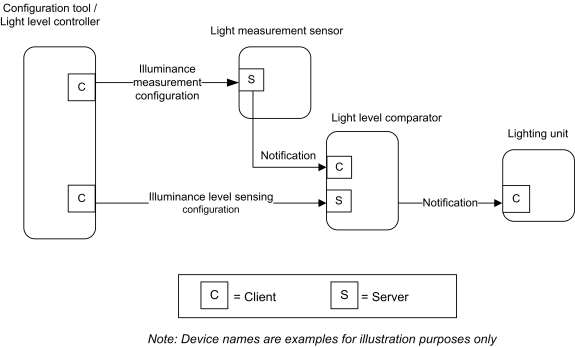
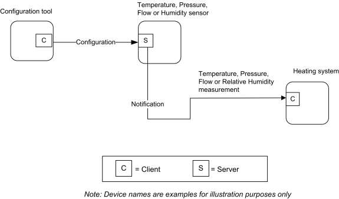
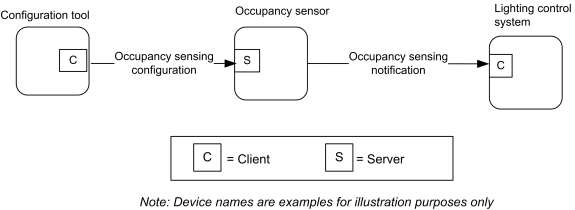

CHAPTER 4 MEASUREMENT AND SENSING ¶
The Cluster Library is made of individual chapters such as this one. See Document Control in the Cluster Library for a list of all chapters and documents. References between chapters are made using a X.Y notation where X is the chapter and Y is the sub-section within that chapter. References to external documents are contained in Chapter 1 and are made using [Rn] notation.
4.1 General Description ¶
4.1.1 Introduction ¶
The clusters specified in this document are generic measurement and sensing interfaces that are sufficiently general to be of use across a wide range of application domains.
4.1.2 Cluster List ¶
This section lists the clusters specified in this document and gives examples of typical usage.
4.1.2.1 Illuminance Measurement and Level Sensing ¶
Table 4-1. Illuminance Measurement and Level Sensing Clusters ¶
| Cluster ID | Cluster Name | Description |
|---|---|---|
| 0x0400 | Illuminance Measurement | Attributes and commands for configuring the measurement of illuminance, and reporting illuminance measurements |
| 0x0401 | Illuminance Level Sensing | Attributes and commands for configuring the sensing of illu- minance levels, and reporting whether illuminance is above, below, or on target |
Figure 4-1. Typical Usage of Illuminance Measurement and Level Sensing Clusters ¶

4.1.2.2 Temperature, Pressure and Flow Measurement ¶
Table 4-2. Pressure and Flow Measurement Clusters ¶
| ID | Cluster Name | Description |
|---|---|---|
| 0x0402 | Temperature Measurement | Attributes and commands for configuring the measure- ment of temperature, and reporting temperature meas- urements |
| 0x0403 | Pressure Measurement | Attributes and commands for configuring the measure- ment of pressure, and reporting pressure measurements |
| 0x0404 | Flow Measurement | Attributes and commands for configuring the measure- ment of flow, and reporting flow rates |
| 0x0405 | Relative Humidity Measurement | Attributes and commands for configuring the measure- ment of relative humidity, and reporting relative hu- midity measurements |
Figure 4-2. Typical Usage of Temperature, Pressure and Flow Measurement Clusters ¶

4.1.2.3 Occupancy Sensing ¶
Table 4-3. Occupancy Sensing Clusters ¶
| ID | Cluster Name | Description |
|---|---|---|
| 0x0406 | Occupancy Sensing | Attributes and commands for configuring occupancy sensing, and re- porting occupancy status |
Figure 4-3. Typical Usage of Occupancy Sensing Cluster ¶

4.1.2.4 Electrical Measurement ¶
Table 4-4. Electrical Measurement Clusters ¶
| Cluster ID | Cluster Name | Description |
|---|---|---|
| 0x0b04 | Electrical Measurement | Attributes and commands for measuring electrical usage |
4.1.3 Measured Value ¶
4.1.3.1 Range ¶
For any measurement cluster with MeasuredValue, MinMeasuredValue and MaxMeasuredValue attributes, the following SHALL be always be true:
- If both are defined, then MaxMeasuredValue SHALL be greater than MinMeasuredValue. •
If MaxMeasuredValue is known, then MeasuredValue SHALL be less than or equal to Max- MeasuredValue. •
If MinMeasuredValue is known, then MeasuredValue SHALL be greater than or equal to MinMeas-uredValue.
4.1.3.2 Tolerance ¶
For any measurement cluster with a MeasuredValue and Tolerance attribute, the following SHALL always be true:
The Tolerance attribute SHALL indicate the magnitude of the possible error that is associated with MeasuredValue, using the same units and resolution. The true value SHALL be in the range (Meas-uredValue – Tolerance) to (MeasuredValue + Tolerance).
If known, the true value SHALL never be outside the possible physical range. Some examples: •
a temperature SHALL NOT be below absolute zero •
a concentration SHALL NOT be negative
4.2 Illuminance Measurement ¶
4.2.1 Overview ¶
Please see Chapter 2 for a general cluster overview defining cluster architecture, revision, classification, identification, etc.
The server cluster provides an interface to illuminance measurement functionality, including configuration and provision of notifications of illuminance measurements.
4.2.1.1 Revision History ¶
The global ClusterRevision attribute value SHALL be the highest revision number in the table below.
| Rev | Description |
|---|---|
| 1 | mandatory global ClusterRevision attribute added; CCB 2048 2049 2050 |
| 2 | CCB 2167 |
4.2.1.2 Classification ¶
| Hierarchy | Role | PICS Code | Primary Transaction |
|---|---|---|---|
| Base | Application | ILL | Type 2 (server to client) |
4.2.1.3 Cluster Identifiers ¶
| Identifier | Name |
|---|---|
| 0x0400 | Illuminance Measurement |
4.2.2 Server ¶
4.2.2.1 Dependencies ¶
None
4.2.2.2 Attributes ¶
The Illuminance Measurement attributes summarized in Table 4-5.
Table 4-5. Illuminance Measurement Attributes ¶
| Id | Name | Type | Range | Acc | Def | MO |
|---|---|---|---|---|---|---|
| 0x0000 | MeasuredValue | uint16 | 0x0000 to 0xffff | RP | 0x0000 | M |
| 0x0001 | MinMeasuredValue | uint16 | 0x0001 – 0xfffd | R | ms | M |
| 0x0002 | Max- MeasuredValue | uint16 | 2 to 0xfffe | R | ms | M |
| 0x0003 | Tolerance | uint16 | 0x0000 – 0x0800 | R | ms | O |
|---|---|---|---|---|---|---|
| 0x0004 | LightSensorType | enum8 | 0x00 – 0xff | R | 0xff | O |
4.2.2.2.1 MeasuredValue Attribute ¶
MeasuredValue represents the Illuminance in Lux (symbol lx) as follows:
MeasuredValue = 10,000 x log10 Illuminance + 1
Where 1 lx <= Illuminance <=3.576 Mlx, corresponding to a MeasuredValue in the range 1 to 0xfffe.
The MeasuredValue attribute can take the following values.
- 0x0000 indicates a value of Illuminance that is too low to be measured.
- MinMeasuredValue ≤ MeasuredValue ≤ MaxMeasuredValue under normal circumstances.
- 0xffff indicates that the Illuminance measurement is invalid.
MeasuredValue is updated continuously as new measurements are made.
4.2.2.2.2 MinMeasuredValue Attribute ¶
The MinMeasuredValue attribute indicates the minimum value of MeasuredValue that can be measured. A value of 0xffff indicates that this attribute is not defined. See 4.1.3 for more details.
4.2.2.2.3 MaxMeasuredValue Attribute ¶
The MaxMeasuredValue attribute indicates the maximum value of MeasuredValue that can be measured. A value of 0xffff indicates that this attribute is not defined. See 4.1.3 for more details.
4.2.2.2.4 Tolerance Attribute ¶
See 4.1.3.
4.2.2.2.5 LightSensorType Attribute ¶
The LightSensorType attribute specifies the electronic type of the light sensor. This attribute shall be set to one of the non-reserved values listed in Table 4-6.
Table 4-6. Values of the LightSensorType Attribute ¶
| Attribute Value | Description |
|---|---|
| 0x00 | Photodiode |
| 0x01 | CMOS |
| 0x40 – 0xfe | Reserved for manufacturer specific light sensor types |
| 0xff | Unknown |
4.2.2.3 Commands Received ¶
No cluster specific commands are received by the server cluster.
4.2.2.4 Commands Generated ¶
No cluster specific commands are generated by the server cluster.
4.2.2.5 Attribute Reporting ¶
This cluster shall support attribute reporting using the Report Attributes command and according to the minimum and maximum reporting intervals and reportable change settings described in the ZCL Foundation specification (see 2.4.7). The following attributes shall be reported:
MeasuredValue
4.2.3 Client ¶
The client cluster has no dependencies, cluster specific attributes nor specific commands generated or received.
4.3 Illuminance Level Sensing ¶
4.3.1 Overview ¶
Please see Chapter 2 for a general cluster overview defining cluster architecture, revision, classification, identification, etc.
The server cluster provides an interface to illuminance level sensing functionality, including configuration and provision of notifications of whether the illuminance is within, above or below a target band.
4.3.1.1 Revision History ¶
The global ClusterRevision attribute value SHALL be the highest revision number in the table below.
| Rev | Description |
|---|---|
| 1 | mandatory global ClusterRevision attribute added |
4.3.1.2 Classification ¶
| Hierarchy | Role | PICS Code | Primary Transaction |
|---|---|---|---|
| Base | Application | ILLVL | Type 2 (server to client) |
4.3.1.3 Cluster Identifiers ¶
| Identifier | Name |
|---|---|
| 0x0401 | Illuminance Level Sensing |
4.3.2 Server ¶
4.3.2.1 Dependencies ¶
None
4.3.2.2 Attributes ¶
For convenience, the attributes defined in this specification are arranged into sets of related attributes; each set can contain up to 16 attributes. Attribute identifiers are encoded such that the most significant three nibbles specify the attribute set and the least significant nibble specifies the attribute within the set. The currently defined attribute sets are listed in Table 4-7.
Table 4-7. Illuminance Level Sensing Attribute Sets ¶
| Attribute Set Identi- fier | Description |
|---|---|
| 0x000 | Illuminance Level Sensing Information |
| 0x001 | Illuminance Level Sensing Settings |
4.3.2.3 Illuminance Level Sensing Information Attribute Set ¶
The light sensor configuration attribute set contains the attributes summarized in Table 4-8.
Table 4-8. Illuminance Level Sensing Information Attribute Set ¶
| Id | Name | Type | Range | Access | Default | M/O |
|---|---|---|---|---|---|---|
| 0x0000 | LevelStatus | enum8 | 0x00 – 0xfe | RP | - | M |
| 0x0001 | LightSensorType | enum8 | 0x00 – 0xfe | R | - | O |
4.3.2.3.1 LevelStatus Attribute ¶
The LevelStatus attribute indicates whether the measured illuminance is above, below, or within a band around IlluminanceTargetLevel (see 4.3.2.4.1). It may have any non-reserved value shown in Table 4-9.
Table 4-9. Values of the LevelStatus Attribute ¶
| Attribute Value | Description |
|---|---|
| 0x00 | Illuminance on target |
| 0x01 | Illuminance below target |
| 0x02 | Illuminance above target |
4.3.2.3.2 LightSensorType Attribute ¶
The LightSensorType attribute specifies the electronic type of the light sensor. This attribute shall be set to one of the non-reserved values listed in Table 4-10.
Table 4-10. Values of the LightSensorType Attribute ¶
| Attribute Value | Description |
|---|---|
| 0x00 | Photodiode |
| 0x01 | CMOS |
| 0x40 – 0xfe | Reserved for manufacturer specific light sensor types |
| 0xff | Unknown |
4.3.2.4 Illuminance Level Sensing Settings Attribute Set ¶
The light sensor configuration attribute set contains the attributes summarized in Table 4-11Illuminance Level Sensing Settings Attribute Set.
Table 4-11. Illuminance Level Sensing Settings Attribute Set ¶
| Id | Name | Type | Range | Access | Def | M/O |
|---|---|---|---|---|---|---|
| 0x0010 | IlluminanceTargetLevel | uint16 | 0x0000 – 0xfffe | RW | - | M |
4.3.2.4.1 IlluminanceTargetLevel Attribute ¶
The IlluminanceTargetLevel attribute specifies the target illuminance level. This target level is taken as the centre of a ‘dead band’, which must be sufficient in width, with hysteresis bands at both top and bottom, to provide reliable notifications without ‘chatter’. Such a dead band and hysteresis bands must be provided by any implementation of this cluster. (N.B. Manufacturer specific attributes may be provided to configure these).
IlluminanceTargetLevel represents illuminance in Lux (symbol lx) as follows:
IlluminanceTargetLevel = 10,000 x log10 Illuminance
Where 1 lx <= Illuminance <=3.576 Mlx, corresponding to a MeasuredValue in the range 0 to 0xfffe.
A value of 0xffff indicates that this attribute is not valid.
4.3.2.5 Commands Received ¶
No cluster specific commands are received by the server.
4.3.2.6 Commands Generated ¶
No cluster specific commands are generated by the server cluster.
4.3.2.7 Attribute Reporting ¶
This cluster shall support attribute reporting using the Report Attributes command and according to the minimum and maximum reporting interval settings described in the ZCL Foundation Specification (see 2.4.7). The following attribute shall be reported:
LevelStatus
4.3.3 Client ¶
The client cluster has no dependencies, specific attributes nor specific commands generated or received.
4.4 Temperature Measurement ¶
4.4.1 Overview ¶
Please see Chapter 2 for a general cluster overview defining cluster architecture, revision, classification, identification, etc.
The server cluster provides an interface to temperature measurement functionality, including configuration and provision of notifications of temperature measurements.
4.4.1.1 Revision History ¶
The global ClusterRevision attribute value SHALL be the highest revision number in the table below.
| Rev | Description |
|---|---|
| 1 | mandatory global ClusterRevision attribute added |
| 2 | CCB 2241 2370 |
| 3 | CCB 2823 |
4.4.1.2 Classification ¶
| Hierarchy | Role | PICS Code | Primary Transaction |
|---|---|---|---|
| Base | Application | TMP | Type 2 (server to client) |
4.4.1.3 Cluster Identifiers ¶
| Identifier | Name |
|---|---|
| 0x0402 | Temperature Measurement |
4.4.2 Server ¶
4.4.2.1 Dependencies ¶
None
4.4.2.2 Attributes ¶
For convenience, the attributes defined in this specification are arranged into sets of related attributes; each set can contain up to 16 attributes. Attribute identifiers are encoded such that the most significant nibble specifies the attribute set and the least significant nibble specifies the attribute within the set. The currently defined attribute sets are listed in Table 4-12.
Table 4-12. Temperature Measurement Attribute Sets ¶
| Attribute Set Identifier | Description |
|---|---|
| 0x000 | Temperature Measurement Information |
4.4.2.2.1 Temperature Measurement Information Attribute Set ¶
The Temperature Measurement Information attribute set contains the attributes summarized in Table 4-13.
Table 4-13. Temperature Measurement Information Attribute Set ¶
| Id | Name | Type | Range | Acc | Def | M |
|---|---|---|---|---|---|---|
| 0x0000 | MeasuredValue | int16 | MinMeasuredValue – MaxMeasuredValue | RP | non81 | M |
| 0x0001 | MinMeasuredValue | int16 | 0x954d – 0x7ffe | R | non | M |
| 0x0002 | MaxMeasuredValue | int16 | 0x954e – 0x7fff | R | non | M |
| 0x0003 | Tolerance | uint16 | 0x0000 – 0x0800 | R | - | O |
4.4.2.2.1.1 MeasuredValue Attribute ¶
MeasuredValue represents the temperature in degrees Celsius as follows:
MeasuredValue = 100 x temperature in degrees Celsius.
Where -273.15°C <= temperature <= 327.67 ºC, corresponding to a MeasuredValue in the range 0x954d to 0x7fff. The maximum resolution this format allows is 0.01 ºC.
A MeasuredValue of 0x8000 indicates that the temperature measurement is unknown, otherwise the range SHALL be as described in 4.1.3.
MeasuredValue is updated continuously as new measurements are made. MinMeasuredValue and Max- MeasuredValue define the range of the sensor.
4.4.2.2.1.2 MinMeasuredValue Attribute ¶
The MinMeasuredValue attribute indicates the minimum value of MeasuredValue that is capable of being measured. A MinMeasuredValue of 0x8000 indicates that the minimum value is unknown. See 4.1.3 for more details.
4.4.2.2.1.3 MaxMeasuredValue Attribute ¶
81 CCB 2823 0xffff is in the valid range and means -0.1 ºC, so use non-value to mean unknown (see Chapter 2: Data Types).
The MaxMeasuredValue attribute indicates the maximum value of MeasuredValue that is capable of being measured. See 4.1.3 for more details. A MaxMeasuredValue of 0x8000 indicates that the maximum value is unknown.
4.4.2.2.1.4 Tolerance Attribute ¶
See 4.1.3.
4.4.2.3 Commands Received ¶
No cluster specific commands are received by the server cluster.
4.4.2.4 Commands Generated ¶
No cluster specific commands are generated by the server cluster.
4.4.2.5 Attribute Reporting ¶
This cluster shall support attribute reporting using the Report Attributes command and according to the minimum and maximum reporting interval and reportable change settings described in the ZCL Foundation specification (see 2.4.7). The following attributes shall be reported:
MeasuredValue
4.4.3 Client ¶
The client cluster has no dependencies, cluster specific attributes nor specific commands generated or received.
4.5 Pressure Measurement ¶
4.5.1 Overview ¶
Please see Chapter 2 for a general cluster overview defining cluster architecture, revision, classification, identification, etc.
The server cluster provides an interface to pressure measurement functionality, including configuration and provision of notifications of pressure measurements.
4.5.1.1 Revision History ¶
The global ClusterRevision attribute value SHALL be the highest revision number in the table below.
| Rev | Description |
|---|---|
| 1 | mandatory global ClusterRevision attribute added |
| 2 | CCB 2241 2370 |
4.5.1.2 Classification ¶
| Hierarchy | Role | PICS Code | Primary Transaction |
|---|---|---|---|
| Base | Application | PRS | Type 2 (server to client) |
4.5.1.3 Cluster Identifiers ¶
| Identifier | Name |
|---|---|
| 0x0403 | Pressure Measurement |
4.5.2 Server ¶
4.5.2.1 Dependencies ¶
None
4.5.2.2 Attributes ¶
For convenience, the attributes defined in this specification are arranged into sets of related attributes; each set can contain up to 16 attributes. Attribute identifiers are encoded such that the most significant three nibbles specify the attribute set and the least significant nibble specifies the attribute within the set. The currently defined attribute sets are listed in Table 4-14Pressure Measurement Attribute Sets.
Table 4-14. Pressure Measurement Attribute Sets ¶
| Attribute Set Identifier | Description |
|---|---|
| 0x000 | Pressure Measurement Information |
| 0x001 | Extended Pressure Measurement Information |
4.5.2.2.1 Pressure Measurement Information Attribute Set ¶
The Pressure Measurement Information attribute set contains the attributes summarized in Table 4-15.
Table 4-15. Pressure Measurement Information Attribute Set ¶
| Id | Name | Type | Range | Acc | Def | MO |
|---|---|---|---|---|---|---|
| 0x0000 | MeasuredValue | int16 | MinMeasuredValue – MaxMeasuredValue | RP | 0x8000 | M |
| 0x0001 | MinMeasuredValue | int16 | 0x8001– 0x7ffe | R | 0x8000 | M |
| 0x0002 | MaxMeasuredValue | int16 | 0x8002– 0x7fff | R | 0x8000 | M |
|---|---|---|---|---|---|---|
| 0x0003 | Tolerance | uint16 | 0x0000 – 0x0800 | R | - | O |
This set provides for measurements with a fixed maximum resolution of 0.1 kPa.
4.5.2.2.1.1 MeasuredValue Attribute ¶
MeasuredValue represents the pressure in kPa as follows:
MeasuredValue = 10 x Pressure
Where -3276.7 kPa <= Pressure <= 3276.7 kPa, corresponding to a MeasuredValue in the range 0x8001 to 0x7fff.
MinMeasuredValue and MaxMeasuredValue define the range of the sensor.
A MeasuredValue of 0x8000 indicates that the pressure measurement is unknown, otherwise the range SHALL be as described in 4.1.3.
MeasuredValue is updated continuously as new measurements are made.
4.5.2.2.1.2 MinMeasuredValue Attribute ¶
The MinMeasuredValue attribute indicates the minimum value of MeasuredValue that can be measured. A value of 0x8000 means this attribute is not defined. See 4.1.3 for more details.
4.5.2.2.1.3 MaxMeasuredValue Attribute ¶
The MaxMeasuredValue attribute indicates the maximum value of MeasuredValue that can be measured. A value of 0x8000 means this attribute is not defined. See 4.1.3 for more details.
4.5.2.2.1.4 Tolerance Attribute ¶
See 4.1.3.
4.5.2.2.2 Extended Pressure Measurement Information Attribute Set ¶
The Extended Pressure Measurement Information attribute set contains the attributes summarized in Table 4-16.
Table 4-16. Extended Pressure Measurement Information Attribute Set ¶
| Id | Name | Type | Range | Acc | Def | M/O |
|---|---|---|---|---|---|---|
| 0x0010 | ScaledValue | int16 | MinScaledValue – MaxScaledValue | R | 0 | O Note 1 |
| 0x0011 | MinScaledValue | int16 | 0x8001-0x7ffe | R | 0x8000 | O Note 1 |
| 0x0012 | MaxScaledValue | int16 | 0x8002-0x7fff | R | 0x8000 | O Note 1 |
| 0x0013 | ScaledTolerance | uint16 | 0x0000 – 0x0800 | R | - | O Note 2 |
| 0x0014 | Scale | int8 | 0x81 – 0x7f | R | - | O Note 1 |
Note 1: If any one of these attributes is supported, all four shall be supported. Note 2: If this attribute is supported, all attributes in this set shall be supported.
This attribute set is optional, and allows the range and resolution of measured pressures to be extended beyond those catered for by the Pressure Measurement Information Attribute Set, in a way fully backward compatible with devices that implement (or can read) only that attribute set.
4.5.2.2.2.1 ScaledValue Attribute ¶
ScaledValue represents the pressure in Pascals as follows:
ScaledValue = 10Scale x Pressure in Pa
Where -3276.7x10Scale Pa <= Pressure <= 3276.7x10Scale Pa corresponding to a ScaledValue in the range 0x8001 to 0x7fff.
A ScaledValue of 0x8000 indicates that the pressure measurement is invalid.
ScaledValue is updated continuously as new measurements are made.
4.5.2.2.2.2 MinScaledValue Attribute ¶
The MinScaledValue attribute indicates the minimum value of ScaledValue that can be measured. A value of 0x8000 means this attribute is not defined
4.5.2.2.2.3 MaxScaledValue Attribute ¶
The MaxScaledValue attribute indicates the maximum value of ScaledValue that can be measured. A value of 0x8000 means this attribute is not defined.
MaxScaledValue shall be greater than MinScaledValue.
MinScaledValue and MaxScaledValue define the range of the sensor.
4.5.2.2.2.4 ScaledTolerance Attribute ¶
The ScaledTolerance attribute indicates the magnitude of the possible error that is associated with ScaledValue. The true value is located in the range
(ScaledValue – ScaledTolerance) to (ScaledValue + ScaledTolerance).
4.5.2.2.2.5 Scale Attribute ¶
The Scale attribute indicates the base 10 exponent used to obtain ScaledValue (see 4.5.2.2.2.1).
4.5.2.3 Commands ¶
No cluster specific commands are received by the server cluster. No cluster specific commands are generated by the server cluster.
4.5.2.4 Attribute Reporting ¶
This cluster shall support attribute reporting using the Report Attributes command and according to the minimum and maximum reporting interval and reportable change settings described in the ZCL Foundation specification (see 2.4.7). The following attributes shall be reportable:
MeasuredValue
If the Extended Pressure Measurement Information attribute set is implemented, it is recommended that the following attributes are also reportable:
ScaledValue ScaledTolerance
4.5.3 Client ¶
The client cluster has no dependencies, cluster specific attributes nor specific commands generated or received.
4.6 Flow Measurement ¶
4.6.1 Overview ¶
Please see Chapter 2 for a general cluster overview defining cluster architecture, revision, classification, identification, etc.
The server cluster provides an interface to flow measurement functionality, including configuration and provision of notifications of flow measurements.
4.6.1.1 Revision History ¶
The global ClusterRevision attribute value SHALL be the highest revision number in the table below.
| Rev | Description |
|---|---|
| 1 | mandatory global ClusterRevision attribute added |
| 2 | CCB 2241 2370 |
4.6.1.2 Classification ¶
| Hierarchy | Role | PICS Code | Primary Transaction |
|---|---|---|---|
| Base | Application | FLW | Type 2 (server to client) |
4.6.1.3 Cluster Identifiers ¶
| Identifier | Name |
|---|---|
| 0x0404 | Flow Measurement |
4.6.2 Server ¶
4.6.2.1 Dependencies ¶
None
4.6.2.2 Attributes ¶
For convenience, the attributes defined in this specification are arranged into sets of related attributes; each set can contain up to 16 attributes. Attribute identifiers are encoded such that the most significant three nibbles specify the attribute set and the least significant nibble specifies the attribute within the set. The currently defined attribute sets for are listed in Table 4-17.
Table 4-17. Flow Measurement Attribute Sets ¶
| Attribute Set Identifier | Description |
|---|---|
| 0x000 | Flow Measurement Information |
4.6.2.2.1 Flow Measurement Information Attribute Set ¶
The Flow Measurement Information attribute set contains the attributes summarized in Table 4-18.
Table 4-18. Flow Measurement Information Attribute Set ¶
| Id | Name | Type | Range | Acc | Def | MO |
|---|---|---|---|---|---|---|
| 0x0000 | MeasuredValue | uint16 | MinMeasuredValue – MaxMeasuredValue | RP | 0xffff | M |
| 0x0001 | MinMeasuredValue | uint16 | 0x0000 – 0xfffd | R | 0xffff | M |
| 0x0002 | Max- MeasuredValue | uint16 | 0x0001 – 0xfffe | R | 0xffff | M |
| 0x0003 | Tolerance | uint16 | 0x0000 – 0x0800 | R | O |
4.6.2.2.1.1 MeasuredValue Attribute ¶
MeasuredValue represents the flow in m3/h as follows:
MeasuredValue = 10 x Flow
Where 0 m3/h <= Flow <= 6,553.4 m3/h, corresponding to a MeasuredValue in the range 0 to 0xfffe.
The maximum resolution this format allows is 0.1 m3/h.
MinMeasuredValue and MaxMeasuredValue define the range of the sensor.
A MeasuredValue of 0xffff indicates that the pressure measurement is unknown, otherwise the range SHALL be as described in 4.1.3.
MeasuredValue is updated continuously as new measurements are made.
4.6.2.2.1.2 MinMeasuredValue Attribute ¶
The MinMeasuredValue attribute indicates the minimum value of MeasuredValue that can be measured. A value of 0xffff means this attribute is not defined. See 4.1.3 for more details.
4.6.2.2.1.3 MaxMeasuredValue Attribute ¶
The MaxMeasuredValue attribute indicates the maximum value of MeasuredValue that can be measured. A value of 0xffff means this attribute is not defined. See 4.1.3 for more details.
4.6.2.2.1.4 Tolerance Attribute ¶
See 4.1.3.
4.6.2.3 Commands Received ¶
No cluster specific commands are received by the server cluster.
4.6.2.4 Commands Generated ¶
No cluster specific commands are generated by the server cluster.
4.6.2.5 Attribute Reporting ¶
This cluster shall support attribute reporting using the Report Attributes command and according to the minimum and maximum reporting interval and reportable change settings described in the ZCL Foundation specification (see 2.4.7). The following attributes shall be reported:
MeasuredValue
4.6.3 Client ¶
The client cluster has no dependencies, cluster specific attributes nor specific commands generated or received.
4.7 Water Content Measurement ¶
4.7.1 Overview ¶
Please see Chapter 2 for a general cluster overview defining cluster architecture, revision, classification, identification, etc.
This is a base cluster. The server cluster provides an interface to water content measurement functionality. The measurement is reportable and may be configured for reporting. Water content measurements include, but are not limited to, leaf wetness, relative humidity, and soil moisture.
4.7.1.1 Revision History ¶
The global ClusterRevision attribute value SHALL be the highest revision number in the table below.
| Rev | Description |
|---|---|
| 1 | mandatory global ClusterRevision attribute added |
| 2 | CCB 2241 |
4.7.1.2 Classification ¶
| Hierarchy | Role | PICS Code | Primary Transaction |
|---|---|---|---|
| Base | Application | RH | Type 2 (server to client) |
4.7.1.3 Cluster Identifiers ¶
| Identifier | Name | Description |
|---|---|---|
| 0x0405 | Relative Humidity | Percentage of water in the air |
| 0x0407 | Leaf Wetness | Percentage of water on the leaves of plants |
| 0x0408 | Soil Moisture | Percentage of water in the soil |
4.7.2 Server ¶
4.7.2.1 Attributes ¶
Table 4-19. Attributes of the Water Content cluster ¶
| Id | Name | Type | Range | Acc | Def | MO |
|---|---|---|---|---|---|---|
| 0x0000 | MeasuredValue | uint16 | MinMeasuredValue – MaxMeasuredValue | RP | 0xffff | M |
| 0x0001 | MinMeasuredValue | uint16 | 0x0000 – 0x270f | R | 0xffff | M |
| 0x0002 | MaxMeasuredValue | uint16 | 0x0001 – 0x2710 | R | 0xffff | M |
| 0x0003 | Tolerance | uint16 | 0x0000 – 0x0800 | R | O |
4.7.2.1.1 MeasuredValue Attribute ¶
MeasuredValue represents the water content in % as follows:
MeasuredValue = 100 x water content
Where 0% <= water content <= 100%, corresponding to a MeasuredValue in the range 0 to 0x2710.
The maximum resolution this format allows is 0.01%.
MinMeasuredValue and MaxMeasuredValue define the range of the sensor.
A MeasuredValue of 0xffff indicates that the measurement is unknown, otherwise the range SHALL be as described in 4.1.3.
MeasuredValue is updated continuously as new measurements are made.
4.7.2.1.2 MinMeasuredValue Attribute ¶
The MinMeasuredValue attribute indicates the minimum value of MeasuredValue that can be measured. A value of 0xffff means this attribute is not defined. See 4.1.3 for more details.
4.7.2.1.3 MaxMeasuredValue Attribute ¶
The MaxMeasuredValue attribute indicates the maximum value of MeasuredValue that can be measured. A value of 0xffff means this attribute is not defined. See 4.1.3 for more details.
4.7.2.1.4 Tolerance Attribute ¶
See 4.1.3.
4.7.2.2 Commands ¶
No cluster specific commands are received or generated by the server cluster.
4.7.3 Client ¶
The client cluster has no dependencies, cluster specific attributes nor specific commands generated or received.
4.8 Occupancy Sensing ¶
4.8.1 Overview ¶
Please see Chapter 2 for a general cluster overview defining cluster architecture, revision, classification, identification, etc.
The server cluster provides an interface to occupancy sensing functionality, including configuration and provision of notifications of occupancy status.
4.8.1.1 Revision History ¶
The global ClusterRevision attribute value SHALL be the highest revision number in the table below.
| Rev | Description |
|---|---|
| 1 | mandatory global ClusterRevision attribute added |
| 2 | Physical Contact Occupancy feature with mandatory OccupancySensorTypeBitmap |
4.8.1.2 Classification ¶
| Hierarchy | Role | PICS Code | Primary Transaction |
|---|---|---|---|
| Base | Application | OCC | Type 2 (server to client) |
4.8.1.3 Cluster Identifiers ¶
| Identifier | Name |
|---|---|
| 0x0406 | Occupancy Sensing |
4.8.2 Server ¶
4.8.2.1 Dependencies ¶
None
4.8.2.2 Attributes ¶
For convenience, the attributes defined in this specification are arranged into sets of related attributes; each set can contain up to 16 attributes. Attribute identifiers are encoded such that the most significant three nibbles specify the attribute set and the least significant nibble specifies the attribute within the set. The currently defined attribute sets are listed in Table 4-20.
Table 4-20. Occupancy Sensor Attribute Sets ¶
| Attribute Set Identifier | Description |
|---|---|
| 0x000 | Occupancy sensor information |
| 0x001 | PIR configuration |
| 0x002 | Ultrasonic configuration |
|---|---|
| 0x003 | Physical contact configuration |
4.8.2.2.1 Occupancy Sensor Information Set ¶
The occupancy sensor information attribute set contains the attributes summarized in Table 4-21.
Table 4-21. Occupancy Sensor Information Attribute Set ¶
| Id | Name | Type | Range | Access | Def | M/O |
|---|---|---|---|---|---|---|
| 0x0000 | Occupancy | map8 | 0b0000 000x | RP | - | M |
| 0x0001 | OccupancySensorType | enum8 | R | MS | M | |
| 0x0002 | OccupancySensorTypeBitmap | map8 | 0000 0xxx | R | - | M |
4.8.2.2.1.1 Occupancy Attribute ¶
The Occupancy attribute is a bitmap.
Bit 0 specifies the sensed occupancy as follows: 1 = occupied, 0 = unoccupied.
All other bits are reserved.
4.8.2.2.1.2 OccupancySensorType Attribute ¶
The OccupancySensorType attribute specifies the type of the occupancy sensor. This attribute shall be set to one of the non-reserved values listed in Table 4-22.
Table 4-22. Values of the OccupancySensorType Attribute ¶
| Attribute Value | Description |
|---|---|
| 0x00 | PIR |
| 0x01 | Ultrasonic |
| 0x02 | PIR and ultrasonic |
| 0x03 | Physical contact |
4.8.2.2.1.3 OccupancySensorTypeBitmap Attribute ¶
The OccupancySensorTypeBitmap attribute specifies the types of the occupancy sensor, as listed below; a ‘1’ in each bit position indicates this type is implemented.
Table 4-23. The OccupancySensorTypeBitmap Attribute ¶
| Bit | Description |
|---|---|
| Bit0 | PIR |
| Bit1 | Ultrasonic |
| Bit | Description |
|---|---|
| Bit2 | Physical contact |
The value of the OccupancySensorTypeBitmap attribute and the OccupancySensorType attribute SHALL be aligned as defined below.
Table 4-24. Mapping between OccupancySensorType and OccupancySensorTypeBitmap Attributes ¶
| Description | OccupancySensorType attribute | OccupancySensorTypeBit- map attribute |
|---|---|---|
| PIR | 0x00 | 0000 0001 |
| Ultrasonic | 0x01 | 0000 0010 |
| PIR and ultrasonic | 0x02 | 0000 0011 |
| Physical contact and PIR | 0x00 | 0000 0101 |
| Physical contact and ultrasonic | 0x01 | 0000 0110 |
| Physical contact and PIR and ultrasonic | 0x02 | 0000 0111 |
4.8.2.2.2 PIR Configuration Set ¶
The PIR sensor configuration attribute set contains the attributes summarized in Table 4-25.
Table 4-25. Attributes of the PIR Configuration Attribute Set ¶
| Id | Name | Type | Range | Ac- cess | Def | M/O |
|---|---|---|---|---|---|---|
| 0x0010 | PIROccupiedToUnoccupiedDelay | uint16 | 0x00 – 0xfffe | RW | 0x00 | O |
| 0x0011 | PIRUnoccupiedToOccupiedDelay | uint16 | 0x00 – 0xfffe | RW | 0x00 | O |
| 0x0012 | PIRUnoccupiedToOccupiedThreshold | uint8 | 0x01 – 0xfe | RW | 0x01 | O |
4.8.2.2.2.1 PIROccupiedToUnoccupiedDelay Attribute ¶
The PIROccupiedToUnoccupiedDelay attribute is 16 bits in length and specifies the time delay, in seconds, before the PIR sensor changes to its unoccupied state after the last detection of movement in the sensed area.
4.8.2.2.2.2 PIRUnoccupiedToOccupiedDelay Attribute ¶
The PIRUnoccupiedToOccupiedDelay attribute is 16 bits in length and specifies the time delay, in seconds, before the PIR sensor changes to its occupied state after the detection of movement in the sensed area. This attribute is mandatory if the PIRUnoccupiedToOccupiedThreshold attribute is implemented.
4.8.2.2.2.3 PIRUnoccupiedToOccupiedThreshold Attribute ¶
The PIRUnoccupiedToOccupiedThreshold attribute is 8 bits in length and specifies the number of movement detection events that must occur in the period PIRUnoccupiedToOccupiedDelay, before the PIR sensor changes to its occupied state. This attribute is mandatory if the PIRUnoccupiedToOccupiedDelay attribute is implemented.
4.8.2.2.3 Ultrasonic Configuration Set ¶
The ultrasonic sensor configuration attribute set contains the attributes summarized in Table 4-26.
Table 4-26. Attributes of the Ultrasonic Configuration Attribute Set ¶
| Id | Name | Type | Range | Acc | Def | MO |
|---|---|---|---|---|---|---|
| 0x0020 | UltrasonicOccupiedToUnoccupiedDelay | uint16 | 0x0000 – 0xfffe | RW | 0x00 | O |
| 0x0021 | UltrasonicUnoccupiedToOccupiedDelay | uint16 | 0x0000 – 0xfffe | RW | 0x00 | O |
| 0x0022 | UltrasonicUnoccupiedToOccupiedThreshold | uint8 | 0x01 – 0xfe | RW | 0x01 | O |
4.8.2.2.3.1 UltrasonicOccupiedToUnoccupiedDelay Attribute ¶
The UltrasonicOccupiedToUnoccupiedDelay attribute is 16 bits in length and specifies the time delay, in seconds, before the Ultrasonic sensor changes to its unoccupied state after the last detection of movement in the sensed area.
4.8.2.2.3.2 UltrasonicUnoccupiedToOccupiedDelay Attribute ¶
The UltrasonicUnoccupiedToOccupiedDelay attribute is 16 bits in length and specifies the time delay, in seconds, before the Ultrasonic sensor changes to its occupied state after the detection of movement in the sensed area. This attribute is mandatory if the UltrasonicUnoccupiedToOccupiedThreshold attribute is implemented.
4.8.2.2.3.3 UltrasonicUnoccupiedToOccupiedThreshold Attribute ¶
The UltrasonicUnoccupiedToOccupiedThreshold attribute is 8 bits in length and specifies the number of movement detection events that must occur in the period UltrasonicUnoccupiedToOccupiedDelay, before the Ultrasonic sensor changes to its occupied state. This attribute is mandatory if the UltrasonicUnoccu-piedToOccupiedDelay attribute is implemented.
4.8.2.2.4 Physical Contact Configuration Set ¶
The physical contact configuration attribute set contains the attributes summarized below.
Table 4-27. Attributes of the Physical Contact Configuration Attribute Set ¶
| Id | Name | Type | Range | Acc | Def | MO |
|---|---|---|---|---|---|---|
| 0x0030 | PhysicalContactOccupiedToUnoccupiedDelay | uint16 | 0x0000 to 0xfffe | RW | 0x0000 | O |
| 0x0031 | PhysicalContactUnoccupiedToOccupiedDelay | uint16 | 0x0000 to 0xfffe | RW | 0x0000 | O |
| 0x0032 | PhysicalContactUnoccupiedToOccupiedThreshold | uint8 | 0x01 to 0xfe | RW | 0x01 | O |
4.8.2.2.4.1 PhysicalContactOccupiedToUnoccupiedDelay Attribute ¶
The PhysicalContactOccupiedToUnoccupiedDelay attribute is 16 bits in length and specifies the time delay, in seconds, before the physical contact occupancy sensor changes to its unoccupied state after detecting the unoccupied event. The value of 0xffff indicates the sensor does not report occupied to unoccupied transition.
4.8.2.2.4.2 PhysicalContactUnoccupiedToOccupiedDelay Attribute ¶
The PhysicalContactUnoccupiedToOccupiedDelay attribute is 16 bits in length and specifies the time delay, in seconds, before the physical contact sensor changes to its occupied state after the detection of the occupied event.
The value of 0xffff indicates the sensor does not report unoccupied to occupied transition.
4.8.2.2.4.3 PhysicalContactUnoccupiedToOccupiedThreshold Attrib- ¶
ute
The PhysicalContactUnoccupiedToOccupiedThreshold attribute is 8 bits in length and specifies the number of movement detection events that must occur in the period PhysicalContactUnoccupiedToOccupiedDelay, before the PIR sensor changes to its occupied state. This attribute is mandatory if the PhysicalContactUnoc-cupiedToOccupiedDelay attribute is implemented.
4.8.2.3 Commands ¶
No cluster specific commands are received by the server cluster. No cluster specific commands are generated by the server cluster.
4.8.3 Client ¶
The client cluster has no dependencies, cluster specific attributes nor specific commands generated or received.
4.9 Electrical Measurement ¶
4.9.1 Overview ¶
Please see Chapter 2 for a general cluster overview defining cluster architecture, revision, classification, identification, etc.
This cluster provides a mechanism for querying data about the electrical properties as measured by the device. This cluster may be implemented on any device type and be implemented on a per-endpoint basis. For example, a power strip device could represent each outlet on a different endpoint and report electrical information for each individual outlet. The only caveat is that if you implement an attribute that has an associated multiplier and divisor, then you must implement the associated multiplier and divisor attributes. For example if you implement DCVoltage, you must also implement DCVoltageMultiplier and DCVoltageDivisor.
If you are interested in reading information about the power supply or battery level on the device, please see the Power Configuration cluster.
4.9.1.1 Revision History ¶
The global ClusterRevision attribute value SHALL be the highest revision number in the table below.
| Rev | Description |
|---|---|
| 1 | mandatory global ClusterRevision attribute added |
| 2 | CCB 2236 |
| 3 | CCB 2369 2817 |
|---|
4.9.1.2 Classification ¶
| Hierarchy | Role | PICS Code | Primary Transaction |
|---|---|---|---|
| Base | Application | EMR | Type 1 (client to server) |
4.9.1.3 Cluster Identifiers ¶
| Identifier | Name |
|---|---|
| 0x0b04 | Electrical Measurement |
4.9.1.4 Formatting ¶
Most measurement values have an associated multiplier and divisor attribute. Multiplier attributes provide a value to be multiplied against a raw or uncompensated measurement value. Divisor attributes provide a value to divide the results of applying a multiplier attribute against a raw or uncompensated measurement value. If a multiplier or divisor attribute is present, its corresponding divisor or multiplier attribute shall be implemented as well.
4.9.2 Server ¶
4.9.2.1 Dependencies ¶
For the alarm functionality in this cluster to be operational, any endpoint that implements the Electrical Measurement server cluster shall also implement the Alarms server cluster.
4.9.2.2 Attributes ¶
The server side of this cluster contains certain attributes associated with the electrical properties and configuration, as shown in Table 4-28.
Table 4-28. Attributes of the Electrical Measurement Cluster ¶
| Attribute Set Identifier | Description |
|---|---|
| 0x00 | Basic Information |
| 0x01 | DC Measurement |
| 0x02 | DC Formatting |
| 0x03 | AC (Non-phase Specific) Measurements |
| 0x04 | AC (Non-phase Specific) Formatting |
| 0x05 | AC (Single Phase or Phase A) Measurements |
| 0x06 | AC Formatting |
| 0x07 | DC Manufacturer Threshold Alarms |
| Attribute Set Identifier | Description |
|---|---|
| 0x08 | AC Manufacturer Threshold Alarms |
| 0x09 | AC Phase B Measurements |
| 0x0a | AC Phase C Measurements |
4.9.2.2.1 Basic Information ¶
Table 4-29. Electrical Measurement Cluster Basic Information ¶
| Id | Name | Type | Range | Acc | Def | MO |
|---|---|---|---|---|---|---|
| 0x0000 | MeasurementType | map32 | 0x00000000 – 0xffffFFFF | R | 0x00000000 | M |
4.9.2.2.1.1 MeasurementType ¶
This attribute indicates a device’s measurement capabilities. This will be indicated by setting the desire measurement bits to 1, as mentioned in Table 4-30 and DC Measurement
Table 4-31. This attribute will be used client devices to determine what all attribute is supported by the me- ¶
ter. Unused bits should be set to zero.
Table 4-30. MeasurementType Attribute ¶
| Bit | Flag Name / Description |
|---|---|
| 0 | Active measurement (AC) |
| 1 | Reactive measurement (AC) |
| 2 | Apparent measurement (AC) |
| 3 | Phase A measurement |
| 4 | Phase B measurement |
| 5 | Phase C measurement |
| 6 | DC measurement |
| 7 | Harmonics measurement |
| 8 | Power quality measurement |
4.9.2.2.2 DC Measurement ¶
Table 4-31. DC Measurement Attributes ¶
| Id | Name | Type | Range | Acc | Default | M/O |
|---|---|---|---|---|---|---|
| 0x0100 | DCVoltage | int16 | -32767 – 32767 | RP | 0x8000 | O |
| 0x0101 | DCVoltageMin | int16 | -32767 – 32767 | R | 0x8000 | O |
| 0x0102 | DCVoltageMax | int16 | -32767 – 32767 | R | 0x8000 | O |
| 0x0103 | DCCurrent | int16 | -32767 – 32767 | RP | 0x8000 | O |
| 0x0104 | DCCurrentMin | int16 | -32767 – 32767 | R | 0x8000 | O |
| 0x0105 | DCCurrentMax | int16 | -32767 – 32767 | R | 0x8000 | O |
| 0x0106 | DCPower | int16 | -32767 – 32767 | RP | 0x8000 | O |
| 0x0107 | DCPowerMin | int16 | -32767 – 32767 | R | 0x8000 | O |
| 0x0108 | DCPowerMax | int16 | -32767 – 32767 | R | 0x8000 | O |
| 0x0109 – 0x01FF | Reserved |
4.9.2.2.2.1 DCVoltage ¶
The DCVoltage attribute represents the most recent DC voltage reading in Volts (V). If the voltage cannot be measured, a value of 0x8000 is returned.
4.9.2.2.2.2 DCVoltageMin ¶
The DCVoltageMin attribute represents the lowest DC voltage value measured in Volts (V). After resetting, this attribute will return a value of 0x8000 until a measurement is made.
4.9.2.2.2.3 DCVoltageMax ¶
The DCVoltageMax attribute represents the highest DC voltage value measured in Volts (V). After resetting, this attribute will return a value of 0x8000 until a measurement is made.
4.9.2.2.2.4 DCCurrent ¶
The DCCurrent attribute represents the most recent DC current reading in Amps (A). If the current cannot be measured, a value of 0x8000 is returned.
4.9.2.2.2.5 DCCurrentMin ¶
The DCCurrentMin attribute represents the lowest DC current value measured in Amps (A). After resetting, this attribute will return a value of 0x8000 until a measurement is made.
4.9.2.2.2.6 DCCurrentMax ¶
The DCCurrentMax attribute represents the highest DC current value measured in Amps (A). After resetting, this attribute will return a value of 0x8000 until a measurement is made.
4.9.2.2.2.7 DCPower ¶
The DCPower attribute represents the most recent DC power reading in Watts (W). If the power cannot be measured, a value of 0x8000 is returned.
4.9.2.2.2.8 DCPowerMin ¶
The DCPowerMin attribute represents the lowest DC power value measured in Watts (W). After resetting, this attribute will return a value of 0x8000 until a measurement is made.
4.9.2.2.2.9 DCPowerMax ¶
The DCPowerMax attribute represents the highest DC power value measured in Watts (W). After resetting, this attribute will return a value of 0x8000 until a measurement is made.
4.9.2.2.3 DC Formatting ¶
Table 4-32. DC Formatting Attributes ¶
| Id | Name | Type | Range | Access | Default | M/O |
|---|---|---|---|---|---|---|
| 0x0200 | DCVoltageMultiplier | uint16 | 0x0001 – 0xffff | RP | 0x0001 | O |
| 0x0201 | DCVoltageDivisor | uint16 | 0x0001 – 0xffff | RP | 0x0001 | O |
| 0x0202 | DCCurrentMultiplier | uint16 | 0x0001 – 0xffff | RP | 0x0001 | O |
| 0x0203 | DCCurrentDivisor | uint16 | 0x0001 – 0xffff | RP | 0x0001 | O |
| 0x0204 | DCPowerMultiplier | uint16 | 0x0001 – 0xffff | RP | 0x0001 | O |
| 0x0205 | DCPowerDivisor | uint16 | 0x0001 – 0xffff | RP | 0x0001 | O |
4.9.2.2.3.1 DCVoltageMultiplier ¶
The DCVoltageMultiplier provides a value to be multiplied against the DCVoltage, DCVoltageMin, and DCVoltageMax attributes. This attribute must be used in conjunction with the DCVoltageDivisor attribute. 0x0000 is an invalid value for this attribute.
4.9.2.2.3.2 DCVoltageDivisor ¶
The DCVoltageDivisor provides a value to be divided against the DCVoltage, DCVoltageMin, and DCVolt-ageMax attributes. This attribute must be used in conjunction with the DCVoltageMultiplier attribute. 0x0000 is an invalid value for this attribute.
4.9.2.2.3.3 DCCurrentMultiplier ¶
The DCCurrentMultiplier provides a value to be multiplied against the DCCurrent, DCCurrentMin, and DCCurrentMax attributes. This attribute must be used in conjunction with the DCCurrentDivisor attribute. 0x0000 is an invalid value for this attribute.
4.9.2.2.3.4 DCCurrentDivisor ¶
The DCCurrentDivisor provides a value to be divided against the DCCurrent, DCCurrentMin, and DCCur-rentMax attributes. This attribute must be used in conjunction with the DCCurrentMultiplier attribute. 0x0000 is an invalid value for this attribute.
4.9.2.2.3.5 DCPowerMultiplier ¶
The DCPowerMultiplier provides a value to be multiplied against the DCPower, DCPowerMin, and DCPowerMax attributes. This attribute must be used in conjunction with the DCPowerDivisor attribute. 0x0000 is an invalid value for this attribute.
4.9.2.2.3.6 DCPowerDivisor ¶
The DCPowerDivisor provides a value to be divided against the DCPower, DCPowerMin, and DCPowerMax attributes. This attribute must be used in conjunction with the DCPowerMultiplier attribute. 0x0000 is an invalid value for this attribute.
4.9.2.2.4 AC (Non-phase Specific) Measurements ¶
Table 4-33. AC (Non-phase Specific) Measurement Attributes ¶
| Id | Name | Type | Range | Acc | Default | M/O |
|---|---|---|---|---|---|---|
| 0x0300 | ACFrequency | uint16 | 0x0000 – 0xffff | RP | 0xffff | O |
| 0x0301 | ACFrequencyMin | uint16 | 0x0000 – 0xffff | R | 0xffff | O |
| 0x0302 | ACFrequencyMax | uint16 | 0x0000 – 0xffff | R | 0xffff | O |
| 0x0303 | NeutralCurrent | uint16 | 0x0000 – 0xffff | RP | 0xffff | O |
| 0x0304 | TotalActivePower | int32 | -8,388,607–8,388,607 | RP | - | O |
| 0x0305 | TotalReactivePower | int32 | -8,388,607–8,388,607 | RP | - | O |
| 0x0306 | TotalApparentPower | uint32 | 0x000000–0xffffFF | RP | - | O |
| 0x0307 | Measured1stHarmonicCurrent | int16 | -32768 – 32767 | RP | 0x8000 | O |
| Id | Name | Type | Range | Acc | Default | M/O |
|---|---|---|---|---|---|---|
| 0x0308 | Measured3rdHarmonicCurrent | int16 | -32768 – 32767 | RP | 0x8000 | O |
| 0x0309 | Measured5thHarmonicCurrent | int16 | -32768 – 32767 | RP | 0x8000 | O |
| 0x030a | Measured7thHarmonicCurrent | int16 | -32768 – 32767 | RP | 0x8000 | O |
| 0x030b | Measured9thHarmonicCurrent | int16 | -32768 – 32767 | RP | 0x8000 | O |
| 0x030c | Measured11thHarmonicCurrent | int16 | -32768 – 32767 | RP | 0x8000 | O |
| 0x030d | MeasuredPhase1stHarmonicCurrent | int16 | -32768 – 32767 | RP | 0x8000 | O |
| 0x030e | MeasuredPhase3rdHarmonicCurrent | int16 | -32768 – 32767 | RP | 0x8000 | O |
| 0x030f | MeasuredPhase5thHarmonicCurrent | int16 | -32768 – 32767 | RP | 0x8000 | O |
| 0x0310 | MeasuredPhase7thHarmonicCurrent | int16 | -32768 – 32767 | RP | 0x8000 | O |
| 0x0311 | MeasuredPhase9thHarmonicCurrent | int16 | -32768 – 32767 | RP | 0x8000 | O |
| 0x0312 | MeasuredPhase11thHarmonicCurrent | int16 | -32768 – 32767 | RP | 0x8000 | O |
4.9.2.2.4.1 ACFrequency ¶
The ACFrequency attribute represents the most recent AC Frequency reading in Hertz (Hz). If the frequency cannot be measured, a value of 0xffff is returned.
4.9.2.2.4.2 ACFrequencyMin ¶
The ACFrequencyMin attribute represents the lowest AC Frequency value measured in Hertz (Hz). After resetting, this attribute will return a value of 0xffff until a measurement is made.
4.9.2.2.4.3 ACFrequencyMax ¶
The ACFrequencyMax attribute represents the highest AC Frequency value measured in Hertz (Hz). After resetting, this attribute will return a value of 0xffff until a measurement is made.
4.9.2.2.4.4 NeutralCurrent ¶
The NeutralCurrent attribute represents the magnitude of the most recent AC neutral current in Amps. Typically this is a derived value, taking the magnitude of the vector sum of phase current(s). If the neutral current cannot be measured or derived, a value of 0xffff is returned.82
4.9.2.2.4.5 TotalActivePower ¶
Active power represents the current demand of active power delivered or received at the premises, in kW. Positive values indicate power delivered to the premises where negative values indicate power received from the premises. In case if device is capable of measuring multi elements or phases then this will be net active power value.
4.9.2.2.4.6 TotalReactivePower ¶
82 CCB 2369
Reactive power represents the current demand of reactive power delivered or received at the premises, in kVAr. Positive values indicate power delivered to the premises where negative values indicate power received from the premises. In case if device is capable of measuring multi elements or phases then this will be net reactive power value.
4.9.2.2.4.7 TotalApparentPower ¶
Represents the current demand of apparent power, in kVA. In case if device is capable of measuring multi elements or phases then this will be net apparent power value.
4.9.2.2.4.8 MeasuredNthHarmonicCurrent Attributes ¶
The Measured1stHarmonicCurrent through MeasuredNthHarmonicCurrent attributes represent the most recent Nth harmonic current reading in an AC frequency. The unit for this measurement is 10 ^ NthHarmonic- CurrentMultiplier amperes. If NthHarmonicCurrentMultiplier is not implemented the unit is in amperes. If the Nth harmonic current cannot be measured a value of 0x8000 is returned. A positive value indicates the measured Nth harmonic current is positive, and a negative value indicates that the measured Nth harmonic current is negative.
4.9.2.2.4.9 MeasuredPhaseNthHarmonicCurrent Attributes ¶
The MeasuredPhase1stHarmonicCurrent through MeasuredPhaseNthHarmonicCurrent attributes represent the most recent phase of the Nth harmonic current reading in an AC frequency. The unit for this measurement is 10 ^ PhaseNthHarmonicCurrentMultiplier degree. If PhaseNthHarmonicCurrentMultiplier is not implemented the unit is in degree. If the phase of the Nth harmonic current cannot be measured a value of 0x8000 is returned. A positive value indicates the measured phase of the Nth harmonic current is prehurry, and a negative value indicates that the measured phase of the Nth harmonic current is lagging.
4.9.2.2.5 AC (Non-phase Specific) Formatting ¶
Table 4-34. AC (Non-phase Specific) Formatting Attributes ¶
| Id | Name | Type | Range | Acc | Default | M/O |
|---|---|---|---|---|---|---|
| 0x0400 | ACFrequencyMultiplier | uint16 | 0x0001 – 0xffff | RP | 0x0001 | O |
| 0x0401 | ACFrequencyDivisor | uint16 | 0x0001 – 0xffff | RP | 0x0001 | O |
| 0x0402 | PowerMultiplier | uint32 | 0x000000 – 0xffffFF | RP | 0x000001 | O |
| 0x0403 | PowerDivisor | uint32 | 0x00000 – 0xffffFF | RP | 0x000001 | O |
| 0x0404 | HarmonicCurrentMultiplier | int8 | -127 – 127 | RP | 0x00 | O |
| 0x0405 | PhaseHarmonicCurrentMultiplier | int8 | -127 – 127 | RP | 0x00 | O |
4.9.2.2.5.1 ACFrequencyMultiplier ¶
Provides a value to be multiplied against the ACFrequency attribute. This attribute must be used in conjunction with the ACFrequencyDivisor attribute. 0x0000 is an invalid value for this attribute.
4.9.2.2.5.2 ACFrequencyDivisor ¶
Provides a value to be divided against the ACFrequency attribute. This attribute must be used in conjunction with the ACFrequencyMultiplier attribute. 0x0000 is an invalid value for this attribute.
4.9.2.2.5.3 PowerMultiplier ¶
Provides a value to be multiplied against a raw or uncompensated sensor count of power being measured by the metering device. If present, this attribute must be applied against all power/demand values to derive the delivered and received values expressed in the specified units. This attribute must be used in conjunction with the PowerDivisor attribute.
4.9.2.2.5.4 PowerDivisor ¶
Provides a value to divide against the results of applying the Multiplier attribute against a raw or uncompensated sensor count of power being measured by the metering device. If present, this attribute must be applied against all demand/power values to derive the delivered and received values expressed in the specified units. This attribute must be used in conjunction with the PowerMultiplier attribute.
4.9.2.2.5.5 HarmonicCurrentMultiplier ¶
Represents the unit value for the MeasuredNthHarmonicCurrent attribute in the format MeasuredNthHar-monicCurrent * 10 ^ HarmonicCurrentMultiplier amperes.
4.9.2.2.5.6 PhaseHarmonicCurrentMultiplier ¶
Represents the unit value for the MeasuredPhaseNthHarmonicCurrent attribute in the format Meas-uredPhaseNthHarmonicCurrent * 10 ^ PhaseHarmonicCurrentMultiplier degrees.
4.9.2.2.6 AC (Single Phase or Phase A) Measurements ¶
Table 4-35. AC (Single Phase or Phase A) Measurement Attributes ¶
| Id | Name | Type | Range | Acc | Default | M/O |
|---|---|---|---|---|---|---|
| 0x0501 | LineCurrent | uint16 | 0x0000 – 0xffff | RP | 0xffff | O |
| 0x0502 | ActiveCurrent | int16 | -32768 – 32767 | RP | 0x8000 | O |
| 0x0503 | ReactiveCurrent | int16 | -32768 – 32767 | RP | 0x8000 | O |
| 0x0505 | RMSVoltage | uint16 | 0x0000 – 0xffff | RP | 0xffff | O |
| 0x0506 | RMSVoltageMin | uint16 | 0x0000 – 0xffff | R | 0xffff | O |
| 0x0507 | RMSVoltageMax | uint16 | 0x0000 – 0xffff | R | 0xffff | O |
| 0x0508 | RMSCurrent | uint16 | 0x0000 – 0xffff | RP | 0xffff | O |
| 0x0509 | RMSCurrentMin | uint16 | 0x0000 – 0xffff | R | 0xffff | O |
| 0x050a | RMSCurrentMax | uint16 | 0x0000 – 0xffff | R | 0xffff | O |
| 0x050b | ActivePower | int16 | -32768 – 32767 | RP | 0x8000 | O |
| 0x050c | ActivePowerMin | int16 | -32768 – 32767 | R | 0x8000 | O |
| 0x050d | ActivePowerMax | int16 | -32768 – 32767 | R | 0x8000 | O |
| 0x050e | ReactivePower | int16 | -32768 – 32767 | RP | 0x8000 | O |
| 0x050f | ApparentPower | uint16 | 0x0000 – 0xffff | RP | 0xffff | O |
| 0x0510 | PowerFactor | int8 | -100 to +100 | R | 0x00 | O |
| 0x0511 | AverageRMSVoltageMeasurementPeriod | uint16 | 0x0000 – 0xffff | RW | 0x0000 | O |
| Id | Name | Type | Range | Acc | Default | M/O |
|---|---|---|---|---|---|---|
| 0x0512 | AverageRMSOverVoltageCounter | uint16 | 0x0000 – 0xffff | RW | 0x0000 | O |
| 0x0513 | AverageRMSUnderVoltageCounter | uint16 | 0x0000 – 0xffff | RW | 0x0000 | O |
| 0x0514 | RMSExtremeOverVoltagePeriod | uint16 | 0x0000 – 0xffff | RW | 0x0000 | O |
| 0x0515 | RMSExtremeUnderVoltagePeriod | uint16 | 0x0000 – 0xffff | RW | 0x0000 | O |
| 0x0516 | RMSVoltageSagPeriod | uint16 | 0x0000 – 0xffff | RW | 0x0000 | O |
| 0x0517 | RMSVoltageSwellPeriod | uint16 | 0x0000 – 0xffff | RW | 0x0000 | O |
4.9.2.2.6.1 LineCurrent ¶
Represents the single phase or Phase A, AC line current (Square root of active and reactive current) value at the moment in time the attribute is read, in Amps (A). If the instantaneous current cannot be measured, a value of 0x8000 is returned.
4.9.2.2.6.2 ActiveCurrent ¶
Represents the single phase or Phase A, AC active/resistive current value at the moment in time the attribute is read, in Amps (A). Positive values indicate power delivered to the premises where negative values indicate power received from the premises.
4.9.2.2.6.3 ReactiveCurrent ¶
Represents the single phase or Phase A, AC reactive current value at the moment in time the attribute is read, in Amps (A). Positive values indicate power delivered to the premises where negative values indicate power received from the premises.
4.9.2.2.6.4 RMSVoltage ¶
Represents the most recent RMS voltage reading in Volts (V). If the RMS voltage cannot be measured, a value of 0xffff is returned.
4.9.2.2.6.5 RMSVoltageMin ¶
Represents the lowest RMS voltage value measured in Volts (V). After resetting, this attribute will return a value of 0xffff until a measurement is made.
4.9.2.2.6.6 RMSVoltageMax ¶
Represents the highest RMS voltage value measured in Volts (V). After resetting, this attribute will return a value of 0xffff until a measurement is made.
4.9.2.2.6.7 RMSCurrent ¶
Represents the most recent RMS current reading in Amps (A). If the power cannot be measured, a value of 0xffff is returned.
4.9.2.2.6.8 RMSCurrentMin ¶
Represents the lowest RMS current value measured in Amps (A). After resetting, this attribute will return a value of 0xffff until a measurement is made.
4.9.2.2.6.9 RMSCurrentMax ¶
Represents the highest RMS current value measured in Amps (A). After resetting, this attribute will return a value of 0xffff until a measurement is made.
4.9.2.2.6.10 ActivePower ¶
Represents the single phase or Phase A, current demand of active power delivered or received at the premises, in Watts (W). Positive values indicate power delivered to the premises where negative values indicate power received from the premises.
4.9.2.2.6.11 ActivePowerMin ¶
Represents the lowest AC power value measured in Watts (W). After resetting, this attribute will return a value of 0x8000 until a measurement is made.
4.9.2.2.6.12 ActivePowerMax ¶
Represents the highest AC power value measured in Watts (W). After resetting, this attribute will return a value of 0x8000 until a measurement is made.
4.9.2.2.6.13 ReactivePower ¶
Represents the single phase or Phase A, current demand of reactive power delivered or received at the premises, in VAr. Positive values indicate power delivered to the premises where negative values indicate power received from the premises.
4.9.2.2.6.14 ApparentPower ¶
Represents the single phase or Phase A, current demand of apparent (Square root of active and reactive power) power, in VA.
4.9.2.2.6.15 PowerFactor ¶
Contains the single phase or PhaseA, Power Factor ratio in 1/100ths.
4.9.2.2.6.16 AverageRMSVoltageMeasurementPeriod ¶
The Period in seconds that the RMS voltage is averaged over.
4.9.2.2.6.17 AverageRMSOverVoltageCounter ¶
The number of times the average RMS voltage, has been above the AverageRMS OverVoltage threshold since last reset. This counter may be reset by writing zero to the attribute.
4.9.2.2.6.18 AverageRMSUnderVoltageCounter ¶
The number of times the average RMS voltage, has been below the AverageRMS underVoltage threshold since last reset. This counter may be reset by writing zero to the attribute.
4.9.2.2.6.19 RMSExtremeOverVoltagePeriod ¶
The duration in seconds used to measure an extreme over voltage condition.
4.9.2.2.6.20 RMSExtremeUnderVoltagePeriod ¶
The duration in seconds used to measure an extreme under voltage condition.
4.9.2.2.6.21 RMSVoltageSagPeriod ¶
The duration in seconds used to measure a voltage sag condition.
4.9.2.2.6.22 RMSVoltageSwellPeriod ¶
The duration in seconds used to measure a voltage swell condition.
4.9.2.2.7 AC Formatting ¶
Table 4-36. AC Formatting Attributes ¶
| Id | Name | Type | Range | Acc | Default | M/O |
|---|---|---|---|---|---|---|
| 0x0600 | ACVoltageMultiplier | uint16 | 0x0001 – 0xffff | RP | 0x0001 | O |
| 0x0601 | ACVoltageDivisor | uint16 | 0x0001 – 0xffff | RP | 0x0001 | O |
| 0x0602 | ACCurrentMultiplier | uint16 | 0x0001 – 0xffff | RP | 0x0001 | O |
| 0x0603 | ACCurrentDivisor | uint16 | 0x0001 – 0xffff | RP | 0x0001 | O |
| 0x0604 | ACPowerMultiplier | uint16 | 0x0001 – 0xffff | RP | 0x0001 | O |
| 0x0605 | ACPowerDivisor | uint16 | 0x0001 – 0xffff | RP | 0x0001 | O |
4.9.2.2.7.1 ACVoltageMultiplier ¶
Provides a value to be multiplied against the InstantaneousVoltage and RMSVoltage attributes. This attribute must be used in conjunction with the ACVoltageDivisor attribute. 0x0000 is an invalid value for this attribute.
4.9.2.2.7.2 ACVoltageDivisor ¶
Provides a value to be divided against the InstantaneousVoltage and RMSVoltage attributes. This attribute must be used in conjunction with the ACVoltageMultiplier attribute. 0x0000 is an invalid value for this attribute.
4.9.2.2.7.3 ACCurrentMultiplier ¶
Provides a value to be multiplied against the InstantaneousCurrent and RMSCurrent attributes. This attribute must be used in conjunction with the ACCurrentDivisor attribute. 0x0000 is an invalid value for this attribute.
4.9.2.2.7.4 ACCurrentDivisor ¶
Provides a value to be divided against the ACCurrent, InstantaneousCurrent and RMSCurrent attributes. This attribute must be used in conjunction with the ACCurrentMultiplier attribute. 0x0000 is an invalid value for this attribute.
4.9.2.2.7.5 ACPowerMultiplier ¶
Provides a value to be multiplied against the InstantaneousPower and ActivePower attributes. This attribute must be used in conjunction with the ACPowerDivisor attribute. 0x0000 is an invalid value for this attribute.
4.9.2.2.7.6 ACPowerDivisor ¶
Provides a value to be divided against the InstantaneousPower and ActivePower attributes. This attribute must be used in conjunction with the ACPowerMultiplier attribute. 0x0000 is an invalid value for this attribute.
4.9.2.2.8 DC Manufacturer Threshold Alarms ¶
Table 4-37. DC Manufacturer Threshold Alarms Attributes ¶
| Id | Name | Type | Range | Access | Default | M/O |
|---|---|---|---|---|---|---|
| 0x0700 | DCOverloadAlarmsMask | map8 | 0000 00xx | RW | 0000 0000 | O |
| 0x0701 | DCVoltageOverload | int16 | -32768 – 32767 | R | 0xffff | O |
| 0x0702 | DCCurrentOverload | int16 | -32768 – 32767 | R | 0xffff | O |
4.9.2.2.8.1 DCOverloadAlarmsMask ¶
Specifies which configurable alarms may be generated, as listed in Figure 4-4. A ‘1’ in each bit position enables the alarm.
Figure 4-4. The DC Overload Alarm Mask ¶
| Bit | Description |
|---|---|
| Bit0 | Voltage Overload |
| Bit1 | Current Overload |
4.9.2.2.8.2 DCVoltageOverload ¶
Specifies the alarm threshold, set by the manufacturer, for the maximum output voltage supported by device. The value is multiplied and divided by the DCVoltageMultiplier the DCVoltageDivisor respectively.
4.9.2.2.8.3 DCCurrentOverload ¶
Specifies the alarm threshold, set by the manufacturer, for the maximum output current supported by device. The value is multiplied and divided by the DCCurrentMultiplier and DCCurrentDivider respectively.
4.9.2.2.9 AC Manufacturer Threshold Alarms ¶
Table 4-38. AC Manufacturer Threshold Alarms Attributes ¶
| Id | Name | Type | Range | Access | Default | MO |
|---|---|---|---|---|---|---|
| 0x0800 | ACAlarmsMask | map16 | 0000 xxxx | RW | 0000 0000 | O |
| 0x0801 | ACVoltageOverload | int16 | -32768 – 32767 | R | 0xffff | O |
| 0x0802 | ACCurrentOverload | int16 | -32768 – 32767 | R | 0xffff | O |
| 0x0803 | ACActivePowerOverload | int16 | -32768 – 32767 | R | 0xffff | O |
| 0x0804 | ACReactivePowerOverload | int16 | -32768 – 32767 | R | 0xffff | O |
| 0x0805 | AverageRMSOverVoltage | int16 | -32768 – 32767 | R | O |
| Id | Name | Type | Range | Access | Default | MO |
|---|---|---|---|---|---|---|
| 0x0806 | AverageRMSUnderVoltage | int16 | -32768 – 32767 | R | O | |
| 0x0807 | RMSExtremeOverVoltage | int16 | -32768 – 32767 | RW | O | |
| 0x0808 | RMSExtremeUnderVoltage | int16 | -32768 – 32767 | RW | O | |
| 0x0809 | RMSVoltageSag | int16 | -32768 – 32767 | RW | O | |
| 0x080a | RMSVoltageSwell | int16 | -32768 – 32767 | RW | O |
4.9.2.2.9.1 ACAlarmsMask ¶
Specifies which configurable alarms may be generated, as listed in Figure 4-5. A ‘1’ in each bit position enables the alarm.
Figure 4-5. The ACAlarmsMask Attribute ¶
| Bit | Description |
|---|---|
| Bit0 | Voltage Overload |
| Bit1 | Current Overload |
| Bit2 | Active Power Overload |
| Bit3 | Reactive Power Overload |
| Bit4 | Average RMS Over Voltage |
| Bit5 | Average RMS Under Voltage |
| Bit6 | RMS Extreme Over Voltage |
| Bit7 | RMS Extreme Under Voltage |
| Bit8 | RMS Voltage Sag |
| Bit9 | RMS Voltage Swell |
4.9.2.2.9.2 ACVoltageOverload ¶
Specifies the alarm threshold, set by the manufacturer, for the maximum output voltage supported by device. The value is multiplied and divided by the ACVoltageMultiplier the ACVoltageDivisor, respectively. The value is voltage RMS.
4.9.2.2.9.3 ACCurrentOverload ¶
Specifies the alarm threshold, set by the manufacturer, for the maximum output current supported by device. The value is multiplied and divided by the ACCurrentMultiplier and ACCurrentDivider, respectively. The value is current RMS.
4.9.2.2.9.4 ACActivePowerOverload ¶
Specifies the alarm threshold, set by the manufacturer, for the maximum output active power supported by device. The value is multiplied and divided by the ACPowerMultiplier and ACPowerDivisor, respectively.
4.9.2.2.9.5 ACReactivePowerOverload ¶
Specifies the alarm threshold, set by the manufacturer, for the maximum output reactive power supported by device. The value is multiplied and divided by the ACPowerMultiplier and ACPowerDivisor, respectively.
4.9.2.2.9.6 AverageRMSOverVoltage ¶
The average RMS voltage above which an over voltage condition is reported. The threshold shall be configurable within the specified operating range of the electricity meter. The value is multiplied and divided by the ACVoltageMultiplier and ACVoltageDivisor, respectively.
4.9.2.2.9.7 AverageRMSUnderVoltage ¶
The average RMS voltage below which an under voltage condition is reported. The threshold shall be configurable within the specified operating range of the electricity meter. The value is multiplied and divided by the ACVoltageMultiplier and ACVoltageDivisor, respectively.
4.9.2.2.9.8 RMSExtremeOverVoltage ¶
The RMS voltage above which an extreme under voltage condition is reported. The threshold shall be configurable within the specified operating range of the electricity meter. The value is multiplied and divided by the ACVoltageMultiplier and ACVoltageDivisor, respectively.
4.9.2.2.9.9 RMSExtremeUnderVoltage ¶
The RMS voltage below which an extreme under voltage condition is reported. The threshold shall be configurable within the specified operating range of the electricity meter. The value is multiplied and divided by the ACVoltageMultiplier and ACVoltageDivisor, respectively.
4.9.2.2.9.10 RMSVoltageSag ¶
The RMS voltage below which a sag condition is reported. The threshold shall be configurable within the specified operating range of the electricity meter. The value is multiplied and divided by the ACVoltageMul-tiplier and ACVoltageDivisor, respectively.
4.9.2.2.9.11 RMSVoltageSwell ¶
The RMS voltage above which a swell condition is reported. The threshold shall be configurable within the specified operating range of the electricity meter. The value is multiplied and divided by the ACVoltageMul-tiplier and ACVoltageDivisor, respectively.
4.9.2.2.10 AC Phase B Measurements ¶
Table 4-39. AC Phase B Measurements Attributes ¶
| Id | Name | Type | Range | Acc | Def | M/O |
|---|---|---|---|---|---|---|
| 0x0901 | LineCurrentPhB | uint16 | 0x0000 – 0xffff | RP | 0xffff | O |
| 0x0902 | ActiveCurrentPhB | int16 | -32768 – 32767 | RP | 0x8000 | O |
| 0x0903 | ReactiveCurrentPhB | int16 | -32768 – 32767 | RP | 0x8000 | O |
| Id | Name | Type | Range | Acc | Def | M/O |
|---|---|---|---|---|---|---|
| 0x0905 | RMSVoltagePhB | uint16 | 0x0000 – 0xffff | RP | 0xffff | O |
| 0x0906 | RMSVoltageMinPhB | uint16 | 0x0000 – 0xffff | R | 0x8000 | O |
| 0x0907 | RMSVoltageMaxPhB | uint16 | 0x0000 – 0xffff | R | 0x8000 | O |
| 0x0908 | RMSCurrentPhB | uint16 | 0x0000 – 0xffff | RP | 0xffff | O |
| 0x0909 | RMSCurrentMinPhB | uint16 | 0x0000 – 0xffff | R | 0xffff | O |
| 0x090a | RMSCurrentMaxPhB | uint16 | 0x0000 – 0xffff | R | 0xffff | O |
| 0x090b | ActivePowerPhB | int16 | -32768 – 32767 | RP | 0x8000 | O |
| 0x090c | ActivePowerMinPhB | int16 | -32768 – 32767 | R | 0x8000 | O |
| 0x090d | ActivePowerMaxPhB | int16 | -32768 – 32767 | R | 0x8000 | O |
| 0x090e | ReactivePowerPhB | int16 | -32768 – 32767 | RP | 0x8000 | O |
| 0x090f | ApparentPowerPhB | uint16 | 0x0000 – 0xffff | RP | 0xffff | O |
| 0x0910 | PowerFactorPhB | int8 | -100 to +100 | R | 0x00 | O |
| 0x0911 | AverageRMSVoltageMeasurementPeriod- PhB | uint16 | 0x0000 – 0xffff | RW | 0x0000 | O |
| 0x0912 | AverageRMSOverVoltageCounterPhB | uint16 | 0x0000 – 0xffff | RW | 0x0000 | O |
| 0x0913 | AverageRMSUnderVoltageCounterPhB | uint16 | 0x0000 – 0xffff | RW | 0x0000 | O |
| 0x0914 | RMSExtremeOverVoltagePeriodPhB | uint16 | 0x0000 – 0xffff | RW | 0x0000 | O |
| 0x0915 | RMSExtremeUnderVoltagePeriodPhB | uint16 | 0x0000 – 0xffff | RW | 0x0000 | O |
| 0x0916 | RMSVoltageSagPeriodPhB | uint16 | 0x0000 – 0xffff | RW | 0x0000 | O |
| 0x0917 | RMSVoltageSwellPeriodPhB | uint16 | 0x0000 – 0xffff | RW | 0x0000 | O |
4.9.2.2.10.1 LineCurrentPhB ¶
Represents the Phase B, AC line current (Square root sum of active and reactive currents) value at the moment in time the attribute is read, in Amps (A). If the instantaneous current cannot be measured, a value of 0x8000 is returned.
4.9.2.2.10.2 ActiveCurrentPhB ¶
Represents the Phase B, AC active/resistive current value at the moment in time the attribute is read, in Amps (A). Positive values indicate power delivered to the premises where negative values indicate power received from the premises.
4.9.2.2.10.3 ReactiveCurrentPhB ¶
Represents the Phase B, AC reactive current value at the moment in time the attribute is read, in Amps (A). Positive values indicate power delivered to the premises where negative values indicate power received from the premises.
4.9.2.2.10.4 RMSVoltagePhB ¶
Represents the most recent RMS voltage reading in Volts (V). If the RMS voltage cannot be measured, a value of 0xffff is returned.
4.9.2.2.10.5 RMSVoltageMinPhB ¶
Represents the lowest RMS voltage value measured in Volts (V). After resetting, this attribute will return a value of 0xffff until a measurement is made.
4.9.2.2.10.6 RMSVoltageMaxPhB ¶
Represents the highest RMS voltage value measured in Volts (V). After resetting, this attribute will return a value of 0xffff until a measurement is made.
4.9.2.2.10.7 RMSCurrentPhB ¶
Represents the most recent RMS current reading in Amps (A). If the power cannot be measured, a value of 0xffff is returned.
4.9.2.2.10.8 RMSCurrentMinPhB ¶
Represents the lowest RMS current value measured in Amps (A). After resetting, this attribute will return a value of 0x8000 until a measurement is made.
4.9.2.2.10.9 RMSCurrentMaxPhB ¶
Represents the highest RMS current value measured in Amps (A). After resetting, this attribute will return a value of 0x8000 until a measurement is made.
4.9.2.2.10.10 ActivePowerPhB ¶
Represents the Phase B, current demand of active power delivered or received at the premises, in Watts (W). Positive values indicate power delivered to the premises where negative values indicate power received from the premises.
4.9.2.2.10.11 ActivePowerMinPhB ¶
Represents the lowest AC power value measured in Watts (W). After resetting, this attribute will return a value of 0x8000 until a measurement is made.
4.9.2.2.10.12 ActivePowerMaxPhB ¶
Represents the highest AC power value measured in Watts (W). After resetting, this attribute will return a value of 0x8000 until a measurement is made.
4.9.2.2.10.13 ReactivePowerPhB ¶
Represents the Phase B, current demand of reactive power delivered or received at the premises, in VAr. Positive values indicate power delivered to the premises where negative values indicate power received from the premises.
4.9.2.2.10.14 ApparentPowerPhB ¶
Represents the Phase B, current demand of apparent (Square root of active and reactive power) power, in VA.
4.9.2.2.10.15 PowerFactorPhB ¶
Contains the PhaseB, Power Factor ratio in 1/100ths.
4.9.2.2.10.16 AverageRMSVoltageMeasurementPeriodPhB ¶
The Period in seconds that the RMS voltage is averaged over.
4.9.2.2.10.17 AverageRMSOverVoltageCounterPhB ¶
The number of times the average RMS voltage, has been above the AverageRMS OverVoltage threshold since last reset. This counter may be reset by writing zero to the attribute.
4.9.2.2.10.18 AverageRMSUnderVoltageCounterPhB ¶
The number of times the average RMS voltage, has been below the AverageRMS underVoltage threshold since last reset. This counter may be reset by writing zero to the attribute.
4.9.2.2.10.19 RMSExtremeOverVoltagePeriodPhB ¶
The duration in seconds used to measure an extreme over voltage condition.
4.9.2.2.10.20 RMSExtremeUnderVoltagePeriodPhB ¶
The duration in seconds used to measure an extreme under voltage condition.
4.9.2.2.10.21 RMSVoltageSagPeriodPhB ¶
The duration in seconds used to measure a voltage sag condition.
4.9.2.2.10.22 RMSVoltageSwellPeriodPhB ¶
The duration in seconds used to measure a voltage swell condition.
4.9.2.2.11 AC Phase C Measurements ¶
Table 4-40. AC Phase C Measurements Attributes ¶
| Id | Name | Type | Range | Acc | Def | M/O |
|---|---|---|---|---|---|---|
| 0x0a01 | LineCurrentPhC | uint16 | 0x0000 – 0xffff | RP | 0xffff | O |
| 0x0a02 | ActiveCurrentPhC | int16 | -32768 – 32767 | RP | 0x8000 | O |
| 0x0a03 | ReactiveCurrentPhC | int16 | -32768 – 32767 | RP | 0x8000 | O |
| 0x0a05 | RMSVoltagePhC | uint16 | 0x0000 – 0xffff | RP | 0xffff | O |
| 0x0a06 | RMSVoltageMinPhC | uint16 | 0x0000 – 0xffff | R | 0x8000 | O |
| 0x0a07 | RMSVoltageMaxPhC | uint16 | 0x0000 – 0xffff | R | 0x8000 | O |
| 0x0a08 | RMSCurrentPhC | uint16 | 0x0000 – 0xffff | RP | 0xffff | O |
| 0x0a09 | RMSCurrentMinPhC | uint16 | 0x0000 – 0xffff | R | 0xffff | O |
| 0x0a0a | RMSCurrentMaxPhC | uint16 | 0x0000 – 0xffff | R | 0xffff | O |
| Id | Name | Type | Range | Acc | Def | M/O |
|---|---|---|---|---|---|---|
| 0x0a0b | ActivePowerPhC | int16 | -32768 – 32767 | RP | 0x8000 | O |
| 0x0a0c | ActivePowerMinPhC | int16 | -32768 – 32767 | R | 0x8000 | O |
| 0x0a0d | ActivePowerMaxPhC | int16 | -32768 – 32767 | R | 0x8000 | O |
| 0x0a0e | ReactivePowerPhC | int16 | -32768 – 32767 | RP | 0x8000 | O |
| 0x0a0f | ApparentPowerPhC | uint16 | 0x0000 – 0xffff | RP | 0xffff | O |
| 0x0a10 | PowerFactorPhC | int8 | -100 to +100 | R | 0x00 | O |
| 0x0a11 | AverageRMSVoltageMeasurementPeriod- PhC | uint16 | 0x0000 – 0xffff | RW | 0x0000 | O |
| 0x0a12 | AverageRMSOverVoltageCounterPhC | uint16 | 0x0000 – 0xffff | RW | 0x0000 | O |
| 0x0a13 | AverageRMSUnderVoltageCounterPhC | uint16 | 0x0000 – 0xffff | RW | 0x0000 | O |
| 0x0a14 | RMSExtremeOverVoltagePeriodPhC | uint16 | 0x0000 – 0xffff | RW | 0x0000 | O |
| 0x0a15 | RMSExtremeUnderVoltagePeriodPhC | uint16 | 0x0000 – 0xffff | RW | 0x0000 | O |
| 0x0a16 | RMSVoltageSagPeriodPhC | uint16 | 0x0000 – 0xffff | RW | 0x0000 | O |
| 0x0a17 | RMSVoltageSwellPeriodPhC | uint16 | 0x0000 – 0xffff | RW | 0x0000 | O |
4.9.2.2.11.1 LineCurrentPhC ¶
Represents the Phase C, AC line current (Square root of active and reactive current) value at the moment in time the attribute is read, in Amps (A). If the instantaneous current cannot be measured, a value of 0x8000 is returned.
4.9.2.2.11.2 ActiveCurrentPhC ¶
Represents the Phase C, AC active/resistive current value at the moment in time the attribute is read, in Amps (A). Positive values indicate power delivered to the premises where negative values indicate power received from the premises.
4.9.2.2.11.3 ReactiveCurrentPhC ¶
Represents the Phase C, AC reactive current value at the moment in time the attribute is read, in Amps (A). Positive values indicate power delivered to the premises where negative values indicate power received from the premises.
4.9.2.2.11.4 RMSVoltagePhC ¶
Represents the most recent RMS voltage reading in Volts (V). If the RMS voltage cannot be measured, a value of 0xffff is returned.
4.9.2.2.11.5 RMSVoltageMinPhC ¶
Represents the lowest RMS voltage value measured in Volts (V). After resetting, this attribute will return a value of 0xffff until a measurement is made.
4.9.2.2.11.6 RMSVoltageMaxPhC ¶
Represents the highest RMS voltage value measured in Volts (V). After resetting, this attribute will return a value of 0xffff until a measurement is made.
4.9.2.2.11.7 RMSCurrentPhC ¶
Represents the most recent RMS current reading in Amps (A). If the power cannot be measured, a value of 0xffff is returned.
4.9.2.2.11.8 RMSCurrentMinPhC ¶
Represents the lowest RMS current value measured in Amps (A). After resetting, this attribute will return a value of 0x8000 until a measurement is made.
4.9.2.2.11.9 RMSCurrentMaxPhC ¶
Represents the highest RMS current value measured in Amps (A). After resetting, this attribute will return a value of 0x8000 until a measurement is made.
4.9.2.2.11.10 ActivePowerPhC ¶
Represents the Phase C, current demand of active power delivered or received at the premises, in Watts (W). Positive values indicate power delivered to the premises where negative values indicate power received from the premises.
4.9.2.2.11.11 ActivePowerMinPhC ¶
Represents the lowest AC power value measured in Watts (W). After resetting, this attribute will return a value of 0x8000 until a measurement is made.
4.9.2.2.11.12 ActivePowerMaxPhC ¶
Represents the highest AC power value measured in Watts (W). After resetting, this attribute will return a value of 0x8000 until a measurement is made.
4.9.2.2.11.13 ReactivePowerPhC ¶
Represents the Phase C, current demand of reactive power delivered or received at the premises, in VAr. Positive values indicate power delivered to the premises where negative values indicate power received from the premises.
4.9.2.2.11.14 ApparentPowerPhC ¶
Represents the Phase C, current demand of apparent (Square root of active and reactive power) power, in VA.
4.9.2.2.11.15 PowerFactorPhC ¶
Contains the Phase C, Power Factor ratio in 1/100ths.
4.9.2.2.11.16 AverageRMSVoltageMeasurementPeriodPhC ¶
The Period in seconds that the RMS voltage is averaged over
4.9.2.2.11.17 AverageRMSOverVoltageCounterPhC ¶
The number of times the average RMS voltage, has been above the AverageRMS OverVoltage threshold since last reset. This counter may be reset by writing zero to the attribute.
4.9.2.2.11.18 AverageRMSUnderVoltageCounterPhC ¶
The number of times the average RMS voltage, has been below the AverageRMS underVoltage threshold since last reset. This counter may be reset by writing zero to the attribute.
4.9.2.2.11.19 RMSExtremeOverVoltagePeriodPhC ¶
The duration in seconds used to measure an extreme over voltage condition.
4.9.2.2.11.20 RMSExtremeUnderVoltagePeriodPhC ¶
The duration in seconds used to measure an extreme under voltage condition.
4.9.2.2.11.21 RMSVoltageSagPeriodPhC ¶
The duration in seconds used to measure a voltage sag condition.
4.9.2.2.11.22 RMSVoltageSwellPeriodPhC ¶
The duration in seconds used to measure a voltage swell condition.
4.9.2.3 Server Commands ¶
4.9.2.3.1 Commands Generated ¶
The command IDs generated by the electrical measurement server cluster are listed in Table 4-41.
Table 4-41. Generated Command ID’s for the Electrical Measurement Server ¶
| Command Identifier | Description | M/O |
|---|---|---|
| 0x00 | Get Profile Info Response Command | O |
| 0x01 | Get Measurement Profile Response Command | O |
4.9.2.3.1.1 Get Profile Info Response Command ¶
The Get Profile Info Response Command shall be formatted as illustrated in Figure 4-6.
Figure 4-6. Format of the Get Profile Info Response Command ¶
| Octets | 1 | 1 | 1 | Variable |
|---|---|---|---|---|
| Data Type | uint8 | enum8 | uint8 | Array of attribute IDs (two- byte unsigned values) |
| Field Name | Profile Count | ProfileIntervalPeriod | MaxNumberOfIn- tervals | ListOfAttributes |
4.9.2.3.1.1.1 Payload Details ¶
Profile Count: Total number of supported profile.
ProfileIntervalPeriod: Represents the interval or time frame used to capture parameter for profiling purposes. ProfileIntervalPeriod is an enumerated field representing the timeframes listed in Figure 4-7.
Figure 4-7. ProfileIntervalPeriod ¶
| Enumerated Value | Time Frame |
|---|---|
| 0 | Daily |
| 1 | 60 minutes |
| 2 | 30 minutes |
| 3 | 15 minutes |
| 4 | 10 minutes |
| 5 | 7.5 minutes |
| 6 | 5 minutes |
| 7 | 2.5 minutes |
MaxNumberOfIntervals: Represents the maximum number of intervals the device is capable of returning in one Get Measurement Profile Response command. It is required MaxNumberofIntervals fit within the default Fragmentation ASDU size of 128 bytes, or an optionally agreed upon larger Fragmentation ASDU size supported by both devices as per the application profile supported by the devices.
ListOfAttributes: Represents the list of attributes being profiled.
4.9.2.3.1.2 When Generated ¶
This command is generated when the Client command GetProfileInfo is received.
4.9.2.3.1.3 Get Measurement Profile Response Command ¶
The Get Measurement Profile Response Command shall be formatted as illustrated in Figure 4-8.
Figure 4-8. Format of the Get Measurement Profile Response Command ¶
| Octets | 4 | 1 | 1 | 1 | 1 | Variable |
|---|---|---|---|---|---|---|
| Data Type | UTC | enum8 | enum8 | uint8 | attribId | Array of Attribute values |
| Field Name | StartTime | Status | ProfileIn- ter- valPeriod | NumberOf IntervalsDelivered | Attribute Id | Intervals |
4.9.2.3.1.3.1 Payload Details ¶
StartTime: 32-bit value (in UTC) representing the end time of the most chronologically recent interval being requested. Example: Data collected from 2:00 PM to 3:00 PM would be specified as a 3:00 PM interval (end time).
Status: Table status enumeration in Table 4-42 lists the valid values returned in the Status field.
Table 4-42. List of Status Valid Values ¶
| Status Value | Description |
|---|---|
| 0x00 | Success |
| 0x01 | Attribute Profile not supported |
| 0x02 | Invalid Start Time |
| 0x03 | More intervals requested than can be returned |
| 0x04 | No intervals available for the requested time |
ProfileIntervalPeriod: Represents the interval or time frame used to capture parameter for profiling purposes. Refer to table “ProfileIntervalPeriod”.
NumberofIntervalsDelivered: Represents the number of intervals the device is returning. Please note the number of intervals returned in the Get Measurement Profile Response command can be calculated when the packets are received and can replace the usage of this field. The intent is to provide this information as a convenience.
AttributeID: The attribute that has been profiled by the application.
Intervals: Series of interval data captured using the period specified by the ProfileIntervalPeriod field. The content of the interval data depend of the type of information requested using the AttributeID field in the Get Measurement Profile Command. Data is organized in a reverse chronological order, the oldest intervals are transmitted first and the newest interval is transmitted last. Invalid intervals should be marked as 0xffff. For scaling and data type use the respective attribute set as defined above in attribute sets.
4.9.2.3.1.3.2 When Generated ¶
This command is generated when the Client command GetMeasurementProfile is received.
4.9.2.4 Client Commands ¶
4.9.2.4.1 Commands Generated ¶
The command ID’s generated by the electrical measurement client cluster are listed in Table 4-43.
Table 4-43. Generated Command IDs for the Electrical Measurement Client ¶
| Command Identifier | Description | M/O |
|---|---|---|
| 0x00 | Get Profile Info Command | O |
| 0x01 | Get Measurement Profile Command | O |
4.9.2.4.1.1 Get Profile Info Command ¶
This command has no payload.
4.9.2.4.1.1.1 Effect on Receipt ¶
On receipt of this command, the device shall send a Get Profile Info Response Command. A Default Response with status UNSUP_COMMAND83 shall be returned if command is not supported on the device.
4.9.2.4.1.2 Get Measurement Profile Command ¶
The Get Measurement Profile Command shall be formatted as illustrated in Figure 4-9.
Figure 4-9. Format of the Get Measurement Profile Command ¶
| Octets | 2 | 484 | 1 |
|---|---|---|---|
| Data Type | attribId | UTC | uint8 |
| Field Name | Attribute ID | Start Time | NumberOfIntervals |
4.9.2.4.1.2.1 Payload Details ¶
Attribute ID: The electricity measurement attribute being profiled.
StartTime: 32-bit value (in UTCTime) used to select an Intervals block from all the Intervals blocks available. The Intervals block returned is the most recent block with its StartTime equal or greater to the one provided.
NumberOfIntervals: Represents the number of intervals being requested. This value can’t exceed the size stipulated in the MaxNumberOfIntervals field of Get Profile Info Response Command. If more intervals are requested than can be delivered, the GetMeasurementProfileResponse will return the number of intervals equal to MaxNumberOfIntervals. If fewer intervals available for the time period then only those available are returned.
4.9.2.4.1.2.2 Effect on Receipt ¶
On receipt of this command, the device shall send a Get Measurement Profile Response Command. A ZCL default response with status UNSUP_COMMAND85 shall be returned if command is not supported on the device.
4.10 Electrical Conductivity Measurement ¶
4.10.1 Overview ¶
Please see Chapter 2 for a general cluster overview defining cluster architecture, revision, classification, identification, etc.
The server cluster provides an interface to Electrical Conductivity measurement functionality.
4.10.1.1 Revision History ¶
The global ClusterRevision attribute value SHALL be the highest revision number in the table below.
83 CCB 2477 status code cleanup 84 CCB 2817 UTC is 4 octets 85 CCB 2477 status code cleanup
| Rev | Description |
|---|---|
| 1 | mandatory global ClusterRevision attribute added |
4.10.1.2 Classification ¶
| Hierarchy | Role | PICS Code | Primary Transaction |
|---|---|---|---|
| Base | Application | EC | Type 2 (server to client) |
4.10.1.3 Cluster Identifiers ¶
| Identifier | Name |
|---|---|
| 0x040A | Electrical Conductivity |
4.10.2 Server ¶
4.10.2.1 Attributes ¶
Table 4-44. Attributes of the Electrical Conductivity Measurement server cluster ¶
| Id | Name | Type | Range | Acc | Def | MO |
|---|---|---|---|---|---|---|
| 0x0000 | MeasuredValue | uint16 | MinMeasuredValue to MaxMeasuredValue | RP | 0xffff | M |
| 0x0001 | MinMeasuredValue | uint16 | 0x0000 to MaxMeasuredValue-1 | R | 0xffff | M |
| 0x0002 | MaxMeasuredValue | uint16 | MinMeasuredValue+1 to 0xfffe | R | 0xffff | M |
| 0x0003 | Tolerance | uint16 | 0x0000 to 0x0064 | R | O |
4.10.2.1.1.1 MeasuredValue Attribute ¶
MeasuredValue represents the Electrical Conductivity in EC or mS/m (milli-Siemens per meter) as follows:
MeasuredValue = 10 x Electrical Conductivity in mS/m. The maximum resolution this format allows is 0.1.
A MeasuredValue of 0xffff SHALL indicate an unknown value, otherwise the range SHALL be as described in 4.1.3.
MeasuredValue is updated continuously as new measurements are made.
4.10.2.1.1.2 MinMeasuredValue Attribute ¶
The MinMeasuredValue attribute indicates the minimum value of MeasuredValue that is capable of being measured. A MinMeasuredValue of 0xffff indicates that the minimum value is not defined. See 4.1.3 for more details.
4.10.2.1.1.3 MaxMeasuredValue Attribute ¶
The MaxMeasuredValue attribute indicates the maximum value of MeasuredValue that is capable of being measured. A MaxMeasuredValue of 0xffff indicates that the maximum value is not defined. See 4.1.3 for more details.
4.10.2.1.1.4 Tolerance Attribute ¶
See 4.1.3.
4.10.2.2 Commands ¶
No cluster specific commands are generated or received by the server cluster.
4.10.3 Client ¶
The client cluster has no dependencies, cluster specific attributes nor specific commands generated or received.
4.11 pH Measurement ¶
4.11.1 Overview ¶
Please see Chapter 2 for a general cluster overview defining cluster architecture, revision, classification, identification, etc.
The server cluster provides an interface to pH measurement functionality.
4.11.1.1 Revision History ¶
The global ClusterRevision attribute value SHALL be the highest revision number in the table below.
| Rev | Description |
|---|---|
| 1 | mandatory global ClusterRevision attribute added |
4.11.1.2 Classification ¶
| Hierarchy | Role | PICS Code | Primary Transaction |
|---|---|---|---|
| Base | Application | PH | Type 2 (server to client) |
4.11.1.3 Cluster Identifiers ¶
| Identifier | Name |
|---|---|
| 0x0409 | pH Measurement |
4.11.2 Server ¶
4.11.2.1 Attributes ¶
Table 4-45. Attributes of the pH Measurement server cluster ¶
| Id | Name | Type | Range | Acc | Def | M/O |
|---|---|---|---|---|---|---|
| 0x0000 | MeasuredValue | uint16 | MinMeasuredValue to Max- MeasuredValue | RP | 0xffff | M |
| 0x0001 | MinMeasuredValue | uint16 | 0x0000 to MaxMeasuredValue-1 | R | 0xffff | M |
| 0x0002 | MaxMeasuredValue | uint16 | MinMeasuredValue+1 to 0x0578 | R | 0xffff | M |
| 0x0003 | Tolerance | uint16 | 0x0000 to 0x00c8 | R | O |
4.11.2.1.1.1 MeasuredValue Attribute ¶
MeasuredValue represents the pH with no units as follows: MeasuredValue = 100 x pH.
Where 0.00 <= pH <= 14.00, corresponding to a MeasuredValue in the range 0x0000 to 0x0578. The maximum resolution this format allows is 0.01, this is to accommodate certain applications where such resolution is necessary.
A MeasuredValue of 0xffff SHALL indicate an unknown value, otherwise the range SHALL be as described in 4.1.3.
MeasuredValue is updated continuously as new measurements are made.
4.11.2.1.1.2 MinMeasuredValue Attribute ¶
The MinMeasuredValue attribute indicates the minimum value of MeasuredValue that is capable of being measured. A MinMeasuredValue of 0xffff indicates that the minimum value is not defined. See 4.1.3 for more details.
4.11.2.1.1.3 MaxMeasuredValue Attribute ¶
The MaxMeasuredValue attribute indicates the maximum value of MeasuredValue that is capable of being measured. A MaxMeasuredValue of 0xffff indicates that the maximum value is not defined. See 4.1.3 for more details.
4.11.2.1.1.4 Tolerance Attribute ¶
See 4.1.3.
4.11.2.2 Commands ¶
No cluster specific commands are generated or received by the server cluster.
4.11.3 Client ¶
The client cluster has no dependencies, cluster specific attributes nor specific commands generated or received.
4.12 Wind Speed Measurement ¶
4.12.1 Overview ¶
Please see Chapter 2 for a general cluster overview defining cluster architecture, revision, classification, identification, etc.
The server cluster provides an interface to Wind Speed measurement functionality.
4.12.1.1 Revision History ¶
The global ClusterRevision attribute value SHALL be the highest revision number in the table below.
| Rev | Description |
|---|---|
| 1 | mandatory global ClusterRevision attribute added |
4.12.1.2 Classification ¶
| Hierarchy | Role | PICS Code | Primary Transaction |
|---|---|---|---|
| Base | Application | WSPD | Type 2 (server to client) |
4.12.1.3 Cluster Identifiers ¶
| Identifier | Name |
|---|---|
| 0x040b | Wind Speed Measurement |
4.12.2 Server ¶
4.12.2.1 Attributes ¶
Table 4-46. Attributes of the Wind Speed Measurement server cluster ¶
| Id | Name | Type | Range | Acc | Def | M/O |
|---|---|---|---|---|---|---|
| 0x0000 | MeasuredValue | uint16 | MinMeasuredValue to Max- MeasuredValue | RP | 0xffff | M |
| 0x0001 | MinMeasuredValue | uint16 | 0x0000 to MaxMeasuredValue-1 | R | 0xffff | M |
| 0x0002 | MaxMeasuredValue | uint16 | MinMeasuredValue+1 to 0xfffe | R | 0xffff | M |
| 0x0003 | Tolerance | uint16 | 0x0000 to 0x0308 | R | O |
4.12.2.1.1.1 MeasuredValue Attribute ¶
MeasuredValue represents the Wind Speed in m/s (meters per second) as follows:
MeasuredValue = 100 x Wind Speed in m/s. The maximum resolution this format allows is 0.01.
A MeasuredValue of 0xffff SHALL indicate an unknown value, otherwise the range SHALL be as described in 4.1.3.
MeasuredValue is updated continuously as new measurements are made.
4.12.2.1.1.2 MinMeasuredValue Attribute ¶
The MinMeasuredValue attribute indicates the minimum value of MeasuredValue that is capable of being measured. A MinMeasuredValue of 0xffff indicates that the minimum value is not defined. See 4.1.3 for more details.
4.12.2.1.1.3 MaxMeasuredValue Attribute ¶
The MaxMeasuredValue attribute indicates the maximum value of MeasuredValue that is capable of being measured. A MaxMeasuredValue of 0xffff indicates that the maximum value is not defined. See 4.1.3 for more details.
4.12.2.1.1.4 Tolerance Attribute ¶
See 4.1.3.
4.12.2.2 Commands ¶
No cluster specific commands are generated or received by the server cluster.
4.12.3 Client ¶
The client cluster has no dependencies, cluster specific attributes nor specific commands generated or received.
4.13 Concentration Measurement ¶
4.13.1 Overview ¶
Please see Chapter 2 for a general cluster overview defining cluster architecture, revision, classification, identification, etc.
The server cluster provides an interface to concentration measurement functionality. The measurement is reportable and may be configured for reporting. Concentration measurements include, but are not limited to, levels in gases, such as CO, CO2, and ethylene, or in fluids and solids, such as dissolved oxygen, chemicals & pesticides.
4.13.1.1 Revision History ¶
The global ClusterRevision attribute value SHALL be the highest revision number in the table below.
| Rev | Description |
|---|---|
| 1 | mandatory global ClusterRevision attribute added |
| 2 | CCB 2882 |
4.13.1.2 Classification ¶
| Hierarchy Base | Role | PICS Code | Primary Transaction |
|---|---|---|---|
| Application | CONC | Type 2 (server to client) |
4.13.1.3 Cluster Identifiers ¶
The table below is a list of Cluster Ids that conform to this specification. More than one ambient substance may be supported by the same Cluster Id (e.g. Water and Alcohol). This would make the Cluster Id generic to the ambient substance. A new Cluster Id may also be added that is limited to a single ambient substance to provide more specific self-description. If both generic and specific Cluster Ids appear on an endpoint, then a single instance of the cluster exists on the endpoint, and either Cluster Id can be used to access the cluster interface.
| Cluster Id | Substance Measured | Ambient Substance | Units | Notes (not normative or prescribed) |
|---|---|---|---|---|
| 0x040c | Carbon Monoxide (CO) | Air | Volume | |
| 0x040d | Carbon Dioxide (CO2) | Air | Volume | |
| 0x040e | Ethylene (CH2) | Air | Volume | |
| 0x040f | Ethylene Oxide (C2H4O) | Air | Volume | |
| 0x0410 | Hydrogen (H) | Air | Volume | |
| 0x0411 | Hydrogen Sulfide (H2S) | Air | Volume | |
| 0x0412 | Nitric Oxide (NO) | Air | Volume | |
| 0x0413 | Nitrogen Dioxide (NO2) | Air | Volume | |
| 0x0414 | Oxygen (O2) | Air | Volume | |
| 0x0415 | Ozone (O3) | Air | Volume | |
| 0x0416 | Sulfur Dioxide (SO2) | Air | Volume | |
| 0x0417 | Dissolved Oxygen (DO) | Water | Mass | |
| 0x0418 | Bromate | Drinking Water | Volume | typical range example: not detected to 3.6 PPB typical value example:1.79 PPB |
| 0x0419 | Chloramines | Drinking Water | Volume | typical range example: 0.9 to 3.8 PPM typical value example: 2.87 PPM |
| 0x041a | Chlorine | Drinking Water | Volume | typical range example: 0.1 to 2.4 PPM typical value example: 1.28 PPM |
| 0x041b | Fecal coliform & E. Coli | Drinking Water | Volume | Percent of positive samples typical value example: 0 |
| 0x041c86 | Fluoride | Drinking Water | Volume | typical range example: 0 to 100 PPM typical value example: 0.72 PPM |
86 CCB 2882 wrong id
| 0x041d | Haloacetic Acids | Drinking Water | Volume | typical range example: Not Detected to 20 PPB typical value example: 14 PPB |
| 0x041e | Total Trihalomethanes | Drinking Water | Volume | typical range example: 0 to 100 PPB typical value example: 44 PPB |
| 0x041f | Total Coliform Bacteria | Drinking Water | Volume | Percent of positive samples typical range example: 0 to 100% typical value example: 1.33% |
| 0x0420 | Turbidity | Drinking Water | Volume | Cloudiness of particles in water where an average person would notice a 5 or higher typical range example: 0 to 10 typical value example: 0.18 |
| 0x0421 | Copper | Drinking Water | Volume | typical range example: 0 to 10 PPM typical value example: 0.191 PPM |
| 0x0422 | Lead | Drinking Water | Volume | typical range example: 0 to 10 PPB typical value example: 3.2 PPB |
| 0x0423 | Manganese | Drinking Water | Volume | typical range example: 0 to 1000 PPB typical value example: 31PPB |
| 0x0424 | Sulfate | Drinking Water | Volume | typical range example: 0 to 1000 PPM typical value example: 36 PPM |
| 0x0425 | Bromodichloromethane | Drinking Water | Volume | typical range example: 0 to 1000 PPB typical value example: 9.6 PPB |
| 0x0426 | Bromoform | Drinking Water | Volume | typical range example: 0 to 1000 PPB typical value example: 1.1 PPB |
| 0x0427 | Chlorodibromomethane | Drinking Water | Volume | typical range example: 0 to 1000 PPB typical value example: 6.4 PPB |
| 0x0428 | Chloroform | Drinking Water | Volume | typical range example: 0 to 1000 PPB typical value example: 8.0 PPB |
| 0x0429 | Sodium | Drinking Water | Volume | typical range example: 0 to 1000 PPM typical value example: 27 PPM |
| 0x042A | PM2.5 | Air | Volume | Particulate Matter 2.5 microns or less |
| 0x042B | Formaldehyde | Air | Volume |
4.13.2 Server ¶
4.13.2.1 Attributes ¶
Table 4-47. Attributes of the Concentration Measurement server cluster ¶
| Id | Name | Type | Range | Acc | Def | MO |
|---|---|---|---|---|---|---|
| 0x0000 | MeasuredValue | single | MinMeasuredValue to Max- MeasuredValue | RP | NaN* | M |
| 0x0001 | MinMeasuredValue | single | 0 <= value < MaxMeasuredValue | R | NaN* | M |
| 0x0002 | MaxMeasuredValue | single | MinMeasuredValue < value <= 1 | R | NaN* | M |
| Id | Name | Type | Range | Acc | Def | MO |
|---|---|---|---|---|---|---|
| 0x0003 | Tolerance | single | MS | R | MS | O |
* see Not a Number: Chapter 2 for data type default and invalid values
4.13.2.1.1.1 MeasuredValue Attribute ¶
MeasuredValue represents the concentration as a fraction of 1 (one).
A value of NaN indicates that the concentration measurement is unknown or outside the valid range.
MinMeasuredValue and MaxMeasuredValue define the valid range for MeasuredValue.
MeasuredValue is updated continuously as new measurements are made.
4.13.2.1.1.2 MinMeasuredValue Attribute ¶
The MinMeasuredValue attribute indicates the minimum value of MeasuredValue that is capable of being measured. A MinMeasuredValue of NaN indicates that the MinMeasuredValue is not defined. See 4.1.3 for more details.
4.13.2.1.1.3 MaxMeasuredValue Attribute ¶
The MaxMeasuredValue attribute indicates the maximum value of MeasuredValue that is capable of being measured. A MaxMeasuredValue of NaN indicates that the MaxMeasuredValue is not defined. See 4.1.3 for more details.
4.13.2.1.1.4 Tolerance Attribute ¶
See 4.1.3.
4.13.2.2 Commands ¶
No cluster specific commands are generated or received by the server cluster.
4.13.3 Client ¶
The client cluster has no dependencies, cluster specific attributes nor specific commands generated or received.